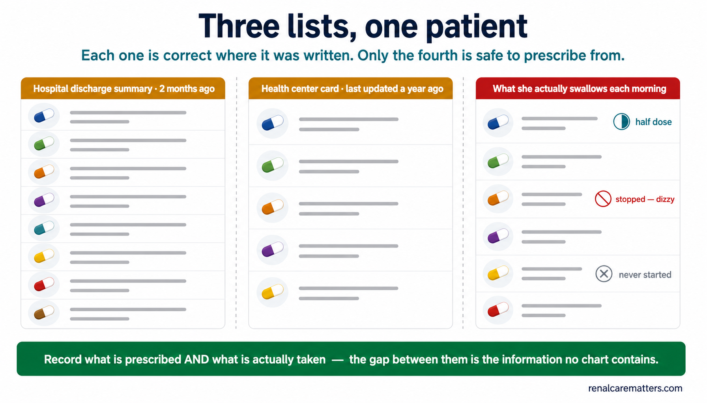
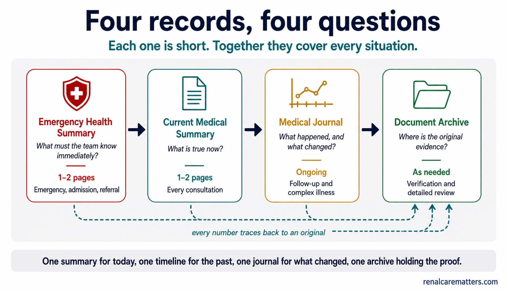
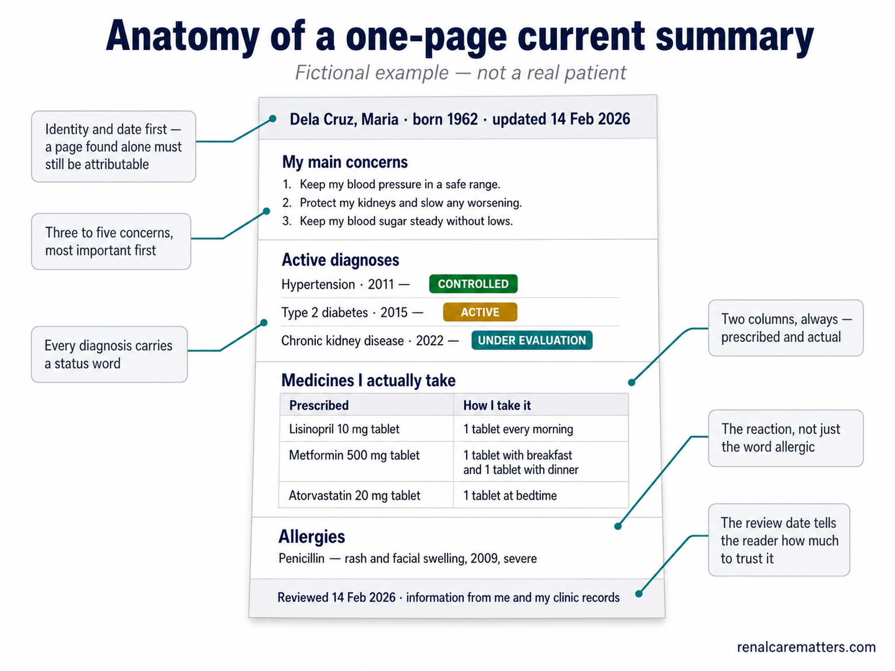
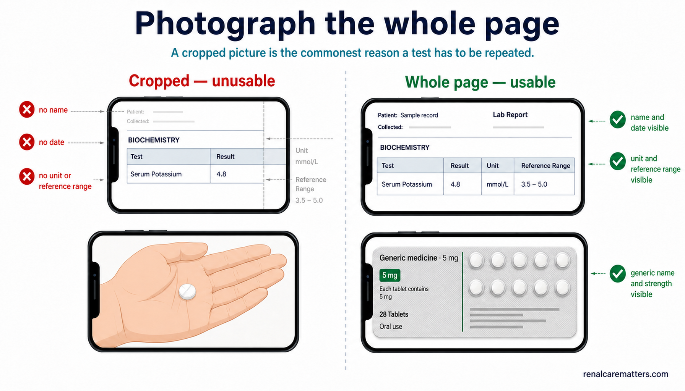
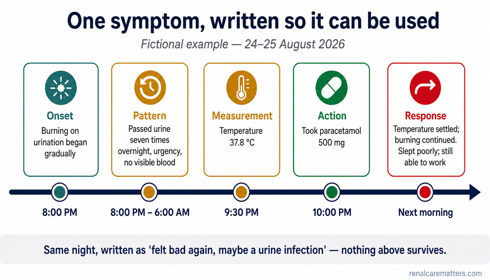
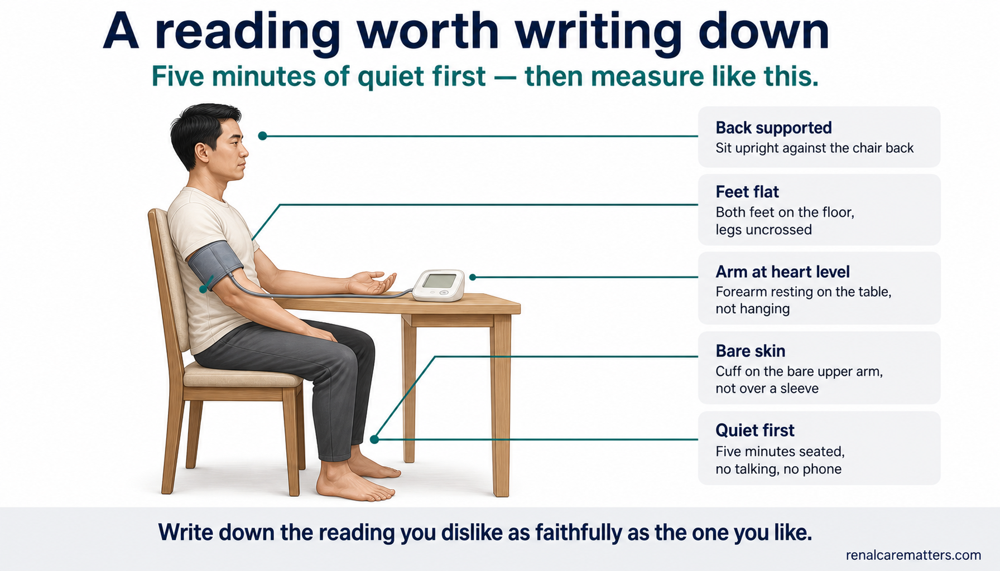
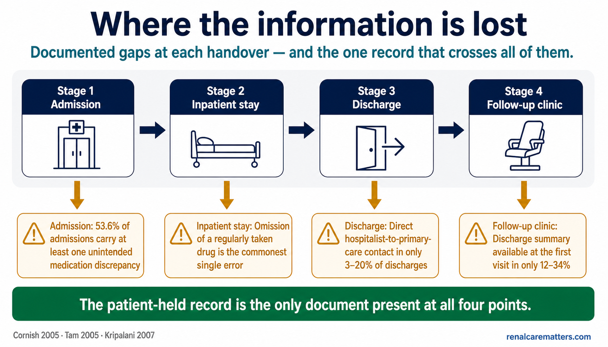
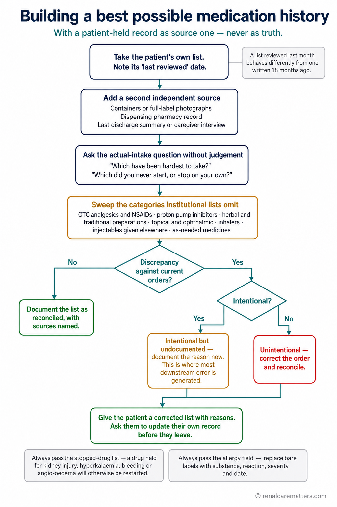

Your health story lives in many buildings at once.Ang inyong kuwentong pangkalusugan ay nakakalat sa maraming gusali.Ang imong sugilanon sa panglawas nagkatag sa daghang building.Ing kekang salita king katawan ing mikalat king dakal a bale.
Think of your medical history as a book. One chapter sits in a private clinic, another in a government hospital, a third in a laboratory's server, and a few loose pages are in a folder at home. Nobody holds the whole book. When you walk into a consultation, the clinician in front of you is being asked to read that book with pages missing and no page numbers — and to make a decision anyway.Isipin ninyo ang inyong kasaysayang medikal bilang isang libro. Ang isang kabanata ay nasa pribadong klinika, ang isa ay nasa pampublikong ospital, ang pangatlo ay nasa server ng laboratoryo, at may ilang kalat na pahina sa isang folder sa bahay. Walang may hawak ng buong libro. Pagpasok ninyo sa konsulta, ang klinikong nasa harap ninyo ay hinihiling na basahin ang librong iyon na may kulang na pahina at walang numero ng pahina — at magdesisyon pa rin.Hunahunaa ang imong kasaysayan nga medikal ingon usa ka libro. Ang usa ka kapitulo naa sa pribadong klinika, ang usa naa sa gobyernong ospital, ang ikatulo naa sa server sa laboratoryo, ug pipila ka nagkatag nga panid naa sa folder sa balay. Walay naghupot sa tibuok libro. Kon mosulod ka sa konsulta, ang kliniko sa imong atubangan gihangyo nga basahon kana nga libro nga kulang og panid ug walay numero sa panid — ug modesisyon gihapon.Isipan yu ing kekang kasaysayan medikal antimong metung a libru. Ing metung a kabanata atyu king pribadung klinika, ing metung king pamahalaang ospital, ing katlu king server ning laboratoryo, at atin pang mikalat a bulung king metung a folder king bale. Alang makatalan king mabilug a libru. Nung lungub kayu king konsulta, ing klinikung atyu king arapan yu ing paki-basa la keng librung ita a kulang ya bulung at alang numeru ning bulung — at magdesisyon ya pa murin.
This is not a small inconvenience. It is one of the best-documented safety gaps in medicine. In a prospective study of patients admitted to general internal medicine wards, 53.6% had at least one unintended discrepancy between the medicines they were actually taking and the medicines ordered on admission; the most common error was simply leaving out a drug the patient was taking every day, and about two in five of these discrepancies had the potential to cause moderate to severe harm. A systematic review of 22 studies found the same pattern across health systems. After discharge the risk continues: roughly one in five patients experiences an adverse event in the weeks after leaving hospital, and adverse drug events are the single largest category.Hindi ito maliit na abala. Isa ito sa pinakamahusay na dokumentadong puwang sa kaligtasan sa medisina. Sa isang prospektibong pag-aaral ng mga pasyenteng na-admit sa general internal medicine, 53.6% ang may hindi bababa sa isang hindi sinasadyang pagkakaiba sa pagitan ng mga gamot na talagang iniinom nila at ng mga gamot na inutos sa pag-admit; ang pinakakaraniwang mali ay ang simpleng pagkalimot sa isang gamot na iniinom araw-araw ng pasyente, at humigit-kumulang dalawa sa bawat limang pagkakaibang ito ay may posibilidad na magdulot ng katamtaman hanggang malubhang pinsala. Isang systematic review ng 22 pag-aaral ang nakakita ng parehong pattern sa iba't ibang sistemang pangkalusugan. Pagkatapos ng discharge, nagpapatuloy ang panganib: humigit-kumulang isa sa bawat limang pasyente ang nakakaranas ng masamang pangyayari sa mga linggo matapos umalis sa ospital, at ang masamang epekto ng gamot ang pinakamalaking kategorya.Dili kini gamay nga kasamok. Usa kini sa labing maayong nadokumento nga kal-ang sa kaluwasan sa medisina. Sa usa ka prospective nga pagtuon sa mga pasyente nga gi-admit sa general internal medicine, 53.6% ang adunay labing menos usa ka wala tuyoa nga kalainan tali sa mga tambal nga ilang giinom gyud ug sa mga tambal nga gimando sa pag-admit; ang labing komon nga sayop mao ang pagkalimot sa usa ka tambal nga giinom sa pasyente adlaw-adlaw, ug mga duha sa matag lima niini nga kalainan adunay potensyal nga makadaot og kasarangan hangtod grabe. Usa ka systematic review sa 22 ka pagtuon nakakita sa samang sumbanan sa lain-laing sistema sa panglawas. Human sa discharge nagpadayon ang risgo: mga usa sa matag lima ka pasyente ang makasinati og daotang hitabo sa mga semana human mobiya sa ospital, ug ang daotang epekto sa tambal mao ang labing dako nga kategoriya.E ya ini malating abala. Metung ya kareng pekamayap a dokumentadung butas king kaligtasan king medisina. King metung a prospektibung pamagsaliksik kareng pasyenteng me-admit king general internal medicine, 53.6% ing atin la pekakulang metung a e sinadyang pamipalain king pilatan da reng ambulung a tune lang inum at reng ambulung a miyutus king pamag-admit; ing pekakaraniwan a mali ing pamakalingwan king metung a ambulung a inum na ning pasyente aldo-aldo, at manga adwa king balang limang pamipalain a ini ing atin kayang magdala kapamilatan king katamtaman angga king masakit a pinsala. Metung a systematic review ning 22 pamagsaliksik ing mekakit king parehung pattern kareng aliwang sistemang pangkatawan. Kaibat ning discharge, magpatuloy ing peligru: manga metung king balang limang pasyente ing makaramdam marok a milyari kareng dominggu kaibat lumwal king ospital, at ing marok a epektu ning ambulung ing pekaragul a kategorya.
The single most useful thing you can carry is not a thicker folder — it is a shorter, more accurate one. A personal medical journal is not a diary and not a replacement for the hospital's official record. It is a communication tool: one current summary, one timeline, one running journal, and one organized archive of the original documents.Ang pinakakapaki-pakinabang na dala ninyo ay hindi ang mas makapal na folder — kundi ang mas maikli at mas tumpak. Ang personal na medical journal ay hindi talaarawan at hindi kapalit ng opisyal na rekord ng ospital. Isa itong kasangkapan sa pakikipag-usap: isang kasalukuyang buod, isang timeline, isang patuloy na journal, at isang maayos na imbakan ng mga orihinal na dokumento.Ang labing mapuslanon nga imong dad-on dili ang mas baga nga folder — kondili ang mas mubo ug mas tukma. Ang personal nga medical journal dili diary ug dili puli sa opisyal nga rekord sa ospital. Usa kini ka himan sa pagpakigsulti: usa ka karon nga sumaryo, usa ka timeline, usa ka nagpadayong journal, ug usa ka organisadong tipiganan sa mga orihinal nga dokumento.Ing pekamapakinabang a dalan yu e ya ing pekakapal a folder — nune ing pekakuyad at pekatune. Ing personal a medical journal e ya talaarawan at e ya kapalit ning opisyal a rekord ning ospital. Metung yang kasangkapan king pamipagsalita: metung a kasalukuyan a buud, metung a timeline, metung a magpatuloy a journal, at metung a maayus a imbakan da reng orihinal a dokumento.
A case that repeats itself every weekIsang kasong paulit-ulit kada linggoUsa ka kaso nga sublisubli matag semanaMetung a kaso a paulit-ulit balang dominggu
A fictional patient, Aling Nena, arrives for follow-up with three medication lists. The discharge summary from her admission two months ago lists eight drugs. The barangay health center's card lists five. What she actually swallows each morning is six — she stopped one because it made her dizzy, halved another because a full box costs more than her weekly budget, and never started a third because the pharmacy had no stock. Every one of those three lists is "correct" from where it was written. Only the fourth version — what she actually takes — can safely guide the next prescription.Isang kathang-isip na pasyente, si Aling Nena, ay dumating para sa follow-up dala ang tatlong listahan ng gamot. Ang discharge summary mula sa kanyang pagka-admit dalawang buwan na ang nakararaan ay may walong gamot. Ang kard ng barangay health center ay may lima. Ang talagang iniinom niya tuwing umaga ay anim — huminto siya sa isa dahil nahihilo siya, ginawang kalahati ang isa dahil ang buong kahon ay mas mahal kaysa sa kanyang lingguhang badyet, at hindi man lang sinimulan ang pangatlo dahil walang stock ang botika. Bawat isa sa tatlong listahang iyon ay "tama" mula sa kung saan ito isinulat. Ang ikaapat na bersyon lamang — ang talagang iniinom niya — ang ligtas na makakagabay sa susunod na reseta.Usa ka gimugna nga pasyente, si Aling Nena, miabot alang sa follow-up nga nagdala og tulo ka listahan sa tambal. Ang discharge summary gikan sa iyang pag-admit duha ka bulan ang milabay adunay walo ka tambal. Ang kard sa barangay health center adunay lima. Ang tinuod niyang giinom matag buntag mao ang unom — mihunong siya sa usa tungod kay gilipong siya, gitunga ang usa tungod kay ang tibuok kahon mas mahal kay sa iyang semanal nga badyet, ug wala gyud gisugdan ang ikatulo tungod kay walay stock ang botika. Ang matag usa niadtong tulo ka listahan "husto" gikan sa dapit diin kini gisulat. Ang ikaupat lamang nga bersyon — ang tinuod niyang giinom — ang luwas nga makagiya sa sunod nga reseta.Metung a kathang-isip a pasyente, i Apung Nena, dinatang ya para king follow-up a magdala atlung listahan ning ambulung. Ing discharge summary manibat king pamag-admit na adwang bulan na ing milabas ing atin yang walung ambulung. Ing kard ning barangay health center ing atin yang lima. Ing tune nang inum balang abak ing anam — tinuknang ya king metung uling malulu ya, ginawa nang kapitna ing metung uling ing mabilug a kahon ing mas mal kesa king kayang lingguhang badyet, at e ne man sinimulan ing katlu uling alang stock ing botika. Balang metung kareng atlung listahan a ita ing "tama" manibat king nokarin ya misulat. Ing kapat mung bersyon — ing tune nang inum — ing ligtas a makagabay king tutuking reseta.

A fictional example: the same patient carries three medication lists that disagree — eight medicines on the hospital discharge summary, five on the health center card, and six actually swallowed each morning, with one halved for dizziness, one stopped, and one never started because the pharmacy had no stock. Only a record that keeps prescribed and actually taken side by side exposes the difference.Isang kathang-isip na halimbawa: ang parehong pasyente ay may tatlong listahan ng gamot na hindi magkatugma — walong gamot sa discharge summary ng ospital, lima sa kard ng health center, at anim ang talagang iniinom tuwing umaga, na may isang hinati dahil sa pagkahilo, isang itinigil, at isang hindi man lang sinimulan dahil walang stock ang botika. Ang rekord lamang na magkatabi ang nakareseta at ang talagang iniinom ang nagbubunyag ng pagkakaiba.Usa ka gimugna nga pananglitan: ang samang pasyente adunay tulo ka listahan sa tambal nga wala magkauyon — walo ka tambal sa discharge summary sa ospital, lima sa kard sa health center, ug unom ang tinuod nga giinom matag buntag, nga may usa nga gitunga tungod sa kalipong, usa nga gihunong, ug usa nga wala gyud gisugdan tungod kay walay stock ang botika. Ang rekord lamang nga magtapad ang gireseta ug ang tinuod nga giinom ang magbutyag sa kalainan.Metung a kathang-isip a alimbawa: ing parehung pasyente ing atin yang atlung listahan ning ambulung a e mitutugma — walung ambulung king discharge summary ning ospital, lima king kard ning health center, at anam ing tune nang inum balang abak, a atin metung a mipitna uli ning kalulu, metung a mituknangan, at metung a e ne man inumpisan uling alang stock ing botika. Ing rekord mu a misiping ing mireseta at ing tune a inum ing mamialwal king pamipalain.
Write two columns, not oneSumulat ng dalawang kolum, hindi isaPagsulat og duha ka kolum, dili usaSumulat kang adwang kolum, e metung
In your medicine list, keep "what the prescription says" and "what I actually take" side by side. The gap between those two columns is often the most clinically important information in the entire record — and it is invisible in every hospital chart.Sa inyong listahan ng gamot, panatilihing magkatabi ang "ang nakasulat sa reseta" at "ang talagang iniinom ko". Ang agwat sa pagitan ng dalawang kolum na iyon ay madalas ang pinakamahalagang impormasyong klinikal sa buong rekord — at hindi ito nakikita sa anumang chart ng ospital.Sa imong listahan sa tambal, ipatapad ang "unsay giingon sa reseta" ug ang "unsay tinuod nakong giinom". Ang kal-ang tali niadtong duha ka kolum kasagaran mao ang labing importanteng impormasyong klinikal sa tibuok rekord — ug dili kini makita sa bisan unsang chart sa ospital.King kekang listahan ning ambulung, patuluyan mong misiping ing "nanung makasulat king reseta" at ing "nanung tune kung inum". Ing butas king pilatan da reng adwang kolum a ita ing pane pekamahalagang impormasyung klinikal king mabilug a rekord — at e ya akakit king ninumang chart ning ospital.
Four records, each answering a different question.Apat na rekord, bawat isa ay sumasagot sa ibang tanong.Upat ka rekord, ang matag usa nagtubag sa lahi nga pangutana.Apat a rekord, balang metung ing pakibat ya king aliwang kutang.
People usually try to build one enormous file that answers everything. It never works, because a paramedic in an ambulance and a nephrologist reviewing five years of kidney function need completely different things at completely different speeds. Split the work into four records instead. Each one is short, each one has a job, and together they cover every situation you are likely to face.Karaniwang sinusubukan ng mga tao na gumawa ng isang napakalaking file na sumasagot sa lahat. Hindi ito gumagana, dahil ang paramediko sa ambulansya at ang nephrologist na sumusuri ng limang taong function ng bato ay nangangailangan ng ganap na magkaibang bagay sa ganap na magkaibang bilis. Sa halip, hatiin ang gawain sa apat na rekord. Bawat isa ay maikli, bawat isa ay may trabaho, at magkasama nilang sasakupin ang bawat sitwasyong maaari ninyong harapin.Kasagaran ang mga tawo mosulay paghimo og usa ka dako kaayo nga file nga motubag sa tanan. Dili gyud kini molihok, tungod kay ang paramediko sa ambulansya ug ang nephrologist nga nagrepaso sa lima ka tuig nga function sa kidney nagkinahanglan og hingpit nga lahi nga mga butang sa hingpit nga lahi nga katulin. Hinuon, bahina ang trabaho sa upat ka rekord. Ang matag usa mubo, ang matag usa adunay trabaho, ug dungan nilang masakop ang matag sitwasyon nga imong maatubang.Karaniwan lang subukan da reng tau a gawan ing metung a pekaragul a file a pakibat ya king eganagana. E ya pane gagana, uling ing paramediku king ambulansya at ing nephrologist a susuri king limang banwang function ning batu ing kailangan da la reng bage a mikaiba at king bilis a mikaiba. Nune, ibage ye ing dapat king apat a rekord. Balang metung makuyad ya, balang metung atin yang dapat, at sabay dala kayang sakupan ing balang sitwasyun a masalese yung arapan.

The four records and the question each one answers: an emergency summary for what a team must know in seconds, a current summary for what is true today, a journal for what changed over time, and an archive holding the original reports that every number traces back to.Ang apat na rekord at ang tanong na sinasagot ng bawat isa: buod pang-emergency para sa dapat malaman ng koponan sa loob ng ilang segundo, kasalukuyang buod para sa totoo ngayon, journal para sa nagbago sa paglipas ng panahon, at imbakan ng orihinal na ulat na pinagbabatayan ng bawat numero.Ang upat ka rekord ug ang pangutana nga gitubag sa matag usa: sumaryo alang sa emergency para sa kinahanglang mahibaloan sa team sulod sa pipila ka segundo, karon nga sumaryo para sa tinuod karon, journal para sa nausab sa paglabay sa panahon, ug tipiganan sa orihinal nga report nga gibasehan sa matag numero.Ding apat a rekord at ing kutang a pakibat da reng balang metung: buud para king emergency para king dapat dang abalu ning koponan king lub da reng pilang segundo, kasalukuyan a buud para king tune ngeni, journal para king mibayu king pamanaun, at imbakan da reng orihinal a report a pikuanan ning balang numeru.
Emergency Health SummaryBuod Pang-EmergencySumaryo alang sa EmergencyBuud Para King Emergency
One or two pages someone can read in sixty seconds while you are too unwell to speak. Serious allergies and the actual reaction, blood thinners, insulin, dialysis details, implanted devices, and one contact number.Isa o dalawang pahinang mababasa ng iba sa loob ng animnapung segundo habang masama ang inyong pakiramdam para magsalita. Malubhang allergy at ang aktuwal na reaksyon, pampanipis ng dugo, insulin, detalye ng dialysis, nakatanim na device, at isang numerong matatawagan.Usa o duha ka panid nga mabasa sa uban sulod sa kan-uman ka segundo samtang dili ka makasulti. Grabeng allergy ug ang tinuod nga reaksyon, pampanipis sa dugo, insulin, detalye sa dialysis, gitanom nga device, ug usa ka numero nga matawagan.Metung o adwang bulung a abasa ning aliwa king lub ning anam a pulu segundo kabang e ka makapagsalita. Masakit a allergy at ing tune a reaksyon, pampanipis ning daya, insulin, detalye ning dialysis, mitanam a device, at metung a numerung matawagan.
Current Medical SummaryKasalukuyang Buod MedikalKaron nga Sumaryo MedikalKasalukuyan a Buud Medikal
What is true now: your top three to five concerns, active diagnoses with their status, the medicines you actually take, allergies, recent changes, and who is treating you. Bring this to every consultation.Ang totoo ngayon: ang inyong tatlo hanggang limang pangunahing alalahanin, aktibong diyagnosis kasama ang katayuan nito, ang mga gamot na talagang iniinom ninyo, allergy, mga kamakailang pagbabago, at kung sino ang gumagamot sa inyo. Dalhin ito sa bawat konsulta.Unsay tinuod karon: ang imong tulo hangtod lima ka nag-unang kabalaka, aktibong diagnosis uban sa ilang kahimtang, ang mga tambal nga tinuod nimong giinom, allergy, bag-ong mga kausaban, ug kinsay nagtambal kanimo. Dad-a kini sa matag konsulta.Nanung tune ngeni: ding kekang atlu angga limang pekamaragul a kapagnasan, aktibung diyagnosis kayabe ing katayuan da, ding ambulung a tune yung inum, allergy, reng mayumaliyaring pamibayu, at ninu ing maggamut keka. Dalan me ini king balang konsulta.
Medical JournalMedical JournalMedical JournalMedical Journal
What happened and what changed — the running record of symptoms, home measurements, treatment changes, and how you responded to each one. This is the part that shows direction, not just a snapshot.Ang nangyari at ang nagbago — ang patuloy na talaan ng mga sintomas, sukat sa bahay, pagbabago sa gamutan, at kung paano kayo tumugon sa bawat isa. Ito ang bahaging nagpapakita ng direksyon, hindi lamang isang larawan.Unsay nahitabo ug unsay nausab — ang nagpadayong talaan sa mga simtomas, sukod sa balay, kausaban sa tambal, ug giunsa nimo pagtubag sa matag usa. Kini ang bahin nga nagpakita sa direksyon, dili lang usa ka hulagway.Nanung milyari at nanung mibayu — ing magpatuloy a talaan da reng sintomas, sukad king bale, pamibayu king pamaggamut, at makananu kang tinugun king balang metung. Iti ing dake a pakit ne ing direksyon, e mu metung a letratu.
Document ArchiveImbakan ng DokumentoTipiganan sa DokumentoImbakan da Reng Dokumento
The original, unedited evidence — full laboratory reports, imaging and biopsy results, discharge summaries, operative notes, prescriptions. The other three records point here whenever a number needs to be verified.Ang orihinal at hindi binagong ebidensya — buong ulat ng laboratoryo, resulta ng imaging at biopsy, discharge summary, operative note, reseta. Ang tatlo pang rekord ay tumuturo dito tuwing kailangang beripikahin ang isang numero.Ang orihinal ug wala mausab nga ebidensya — kompletong report sa laboratoryo, resulta sa imaging ug biopsy, discharge summary, operative note, reseta. Ang laing tulo ka rekord motudlo dinhi kon kinahanglang mapamatud-an ang usa ka numero.Ing orihinal at e mibayung ebidensya — mabilug a report ning laboratoryo, resulta ning imaging at biopsy, discharge summary, operative note, reseta. Ding aliwang atlung rekord ing tuturu la keni potang kailangan yang beripikan ing metung a numeru.
| RecordRekordRekordRekord | Question it answersTanong na sinasagotPangutana nga gitubagKutang a pakibat na | LengthHabaGitas-onKaba | Used whenGinagamit kapagGamiton konGagamitan potang |
|---|---|---|---|
| Emergency Health SummaryBuod Pang-EmergencySumaryo alang sa EmergencyBuud Para King Emergency | What must the team know immediately?Ano ang kailangang malaman agad ng koponan?Unsay kinahanglang mahibaloan dayon sa team?Nanu ing kailangan dang abalu agad ning koponan? | 1–2 pages1–2 pahina1–2 panid1–2 bulung | Emergency, admission, referralEmergency, pag-admit, referralEmergency, pag-admit, referralEmergency, pamag-admit, referral |
| Current Medical SummaryKasalukuyang BuodKaron nga SumaryoKasalukuyan a Buud | What is true now?Ano ang totoo ngayon?Unsay tinuod karon?Nanu ing tune ngeni? | 1–2 pages1–2 pahina1–2 panid1–2 bulung | Every consultationBawat konsultaMatag konsultaBalang konsulta |
| Medical JournalMedical JournalMedical JournalMedical Journal | What happened, and what changed?Ano ang nangyari, at ano ang nagbago?Unsay nahitabo, ug unsay nausab?Nanu ing milyari, at nanu ing mibayu? | OngoingPatuloyNagpadayonMagpatuloy | Follow-up and complex illnessFollow-up at masalimuot na sakitFollow-up ug komplikadong sakitFollow-up at masalimuut a sakit |
| Document ArchiveImbakan ng DokumentoTipiganan sa DokumentoImbakan da Reng Dokumento | Where is the original evidence?Nasaan ang orihinal na ebidensya?Asa ang orihinal nga ebidensya?Nokarin ing orihinal a ebidensya? | As neededAyon sa pangangailanganSumala sa panginahanglanAgpang king pangailangan | Verification and detailed reviewBeripikasyon at masusing pagsusuriPagpamatuod ug detalyadong pagrepasoBeripikasyon at masalese a pamanyuri |
Never delay emergency care to finish thisHuwag ipagpaliban ang emergency care para tapusin itoAyaw langana ang emergency care aron mahuman kiniE me papabukas ing emergency care ban ayari me ini
If you have chest pain, severe difficulty breathing, sudden weakness or slurred speech, uncontrolled bleeding, a seizure, or you simply feel that something is badly wrong — go now. An incomplete record is not a reason to wait. Bring whatever you already have and finish the rest later.Kung may sakit kayo sa dibdib, matinding hirap sa paghinga, biglaang panghihina o pagkautal, hindi mapigilang pagdurugo, seizure, o basta pakiramdam ninyong may malubhang mali — pumunta na kaagad. Ang hindi kumpletong rekord ay hindi dahilan para maghintay. Dalhin ang kung ano na ang mayroon kayo at tapusin ang iba mamaya.Kon adunay ka sakit sa dughan, grabeng kalisod sa pagginhawa, kalit nga kaluya o dili klaro nga pagsulti, dili mapugngan nga pagdugo, seizure, o gibati lang nimo nga adunay grabeng sayop — lakaw dayon. Ang dili kompleto nga rekord dili rason sa paghulat. Dad-a kung unsay naa na nimo ug humana ang uban unya.Nung atin kang sakit king salu, masakit a kahirapan king pamanginawa, biglang kalunusan o e malinong pamagsalita, e mapigilan a pamagdaya, seizure, o basta iramdam mung atin masakit a mali — ume na ka ngeni. Ing e kumpletung rekord e ya dahilan ban manaya. Dalan me ing nanu mang atyu na keka at ayari mula reng aliwa kaibat.
My appointment is tomorrow — fifteen minutes is enough.Bukas na ang appointment ko — labinlimang minuto ay sapat na.Ugma na ang akong appointment — napulog lima ka minuto igo na.Bukas na ing appointment ku — labinglimang minutu sapat na.
You do not need the whole system before your next visit. Seven items carry most of the value, and if your documents are within reach they take about fifteen minutes. Write them on one sheet of paper or in one note on your phone. Everything else in this guide can be built slowly, over months.Hindi ninyo kailangan ang buong sistema bago ang susunod ninyong bisita. Pitong bagay ang may dala ng halos lahat ng halaga, at kung nasa abot-kamay ang inyong mga dokumento, aabutin ito ng mga labinlimang minuto. Isulat ang mga ito sa isang papel o sa isang note sa inyong telepono. Ang lahat ng iba pa sa gabay na ito ay maaaring buuin nang dahan-dahan, sa loob ng mga buwan.Dili nimo kinahanglan ang tibuok sistema sa dili pa ang imong sunod nga bisita. Pito ka butang ang nagdala sa kadaghanan sa bili, ug kon anaa ra sa imong duol ang mga dokumento, mokabat kini og mga napulog lima ka minuto. Isulat kini sa usa ka papel o sa usa ka note sa imong telepono. Ang tanan nga uban niini nga giya mahimong tukuron hinay-hinay, sulod sa mga bulan.E mu kailangan ing mabilug a sistema bayu ing tutuking bisita mu. Pitung bage ing magdala king dakal a alaga, at nung atyu king abut-gamat da reng kekang dokumento, magkatagal ya manga labinglimang minutu. Isulat mo la deni king metung a papil o king metung a note king kekang telepono. Ing eganagana kareng aliwa king gabay a ini malyaring gawan a dahan-dahan, king lub da reng bulan.
Your one-page current medical summary.Ang inyong isang-pahinang kasalukuyang buod medikal.Ang imong usa ka panid nga karon nga sumaryo medikal.Ing kekang metung-bulung a kasalukuyan a buud medikal.
This is the page you hand over at the start of every consultation. It should fit on one side of a sheet and be readable in under a minute. Nine things belong on it, and nothing else.Ito ang pahinang iaabot ninyo sa simula ng bawat konsulta. Dapat kasya ito sa isang bahagi ng papel at mabasa sa loob ng wala pang isang minuto. Siyam na bagay ang nararapat dito, at wala nang iba.Kini ang panid nga imong itunol sa sinugdanan sa matag konsulta. Kinahanglan mohaum kini sa usa ka kilid sa papel ug mabasa sulod sa wala pay usa ka minuto. Siyam ka butang ang angay dinhi, ug wala nay lain.Iti ing bulung a iyabut mu king umpisa ning balang konsulta. Dapat magkasya ya king metung a dake ning papil at abasa king lub ning ala pang metung a minutu. Syam a bage ing dapat atyu keni, at ala nang aliwa.
What goes on the summary pageAno ang nasa pahina ng buodUnsay anaa sa panid sa sumaryoNanu ing atyu king bulung ning buud
- Your name, date of birth, and one emergency contact with relationshipPangalan, petsa ng kapanganakan, at isang emergency contact kasama ang relasyonNgalan, petsa sa pagkatawo, ug usa ka emergency contact uban sa relasyonLagyu, petsa ning kebaitan, at metung a emergency contact kayabe ing relasyon
- Three to five current concerns, most important firstTatlo hanggang limang kasalukuyang alalahanin, pinakamahalaga munaTulo hangtod lima ka karon nga kabalaka, labing importante unaAtlu angga limang kasalukuyan a kapagnasan, pekamahalaga mumuna
- Active diagnoses, each with a status word and the year it beganAktibong diyagnosis, bawat isa may salitang katayuan at taon ng pagsisimulaAktibong diagnosis, ang matag usa adunay pulong sa kahimtang ug tuig sa pagsugodAktibung diyagnosis, balang metung atin yang salitang katayuan at banwang inumpisan
- Medicines and supplements you actually take, with strengthsMga gamot at supplement na talagang iniinom, may lakasMga tambal ug supplement nga tinuod nimong giinom, uban sa kusogReng ambulung at supplement a tune yung inum, atin lang kasikanan
- Allergies with the actual reaction and how severe it wasAllergy kasama ang aktuwal na reaksyon at kung gaano kalubhaAllergy uban sa tinuod nga reaksyon ug unsa ka grabeAllergy kayabe ing tune a reaksyon at makananu ya kasakit
- Important changes in the last three to six monthsMahahalagang pagbabago sa nakaraang tatlo hanggang anim na buwanImportanteng kausaban sa milabay nga tulo hangtod unom ka bulanMahalagang pamibayu kareng milabas a atlu angga anam a bulan
- What you can and cannot do on your own (walking, stairs, self-care)Ano ang kaya at hindi ninyong magawa nang mag-isa (paglakad, hagdan, pag-aalaga sa sarili)Unsay imong mahimo ug dili mahimo nga mag-inusara (paglakaw, hagdan, pag-atiman sa kaugalingon)Nanu ing agyu mu at e mu agyu a dili mu (pamaglakad, ading, pamanalaga king sarili)
- The clinicians treating you, with specialty and facilityAng mga klinikong gumagamot sa inyo, may espesyalidad at pasilidadAng mga kliniko nga nagtambal kanimo, uban sa espesyalidad ug pasilidadDing klinikung maggamut keka, atin lang espesyalidad at pasilidad
- The date you last reviewed and updated the pageAng petsa ng huling pagsusuri at pag-update ninyo sa pahinaAng petsa sa katapusang pagrepaso ug pag-update nimo sa panidIng petsa ning tauling pamanyuri at pamag-update mu king bulung

A fictional one-page current summary with its six load-bearing parts labeled: identity and date at the top, three to five concerns in order of importance, each diagnosis carrying a status word, medicines in two columns for prescribed and actual intake, allergies written with the real reaction, and a review date at the foot.Isang kathang-isip na isang-pahinang kasalukuyang buod na may label ang anim na mahahalagang bahagi: pagkakakilanlan at petsa sa itaas, tatlo hanggang limang alalahanin ayon sa halaga, bawat diyagnosis ay may salitang katayuan, gamot sa dalawang kolum para sa nakareseta at talagang iniinom, allergy na may tunay na reaksyon, at petsa ng pagsusuri sa ibaba.Usa ka gimugna nga usa ka panid nga karon nga sumaryo nga may label ang unom ka importanteng bahin: pagkakilanlan ug petsa sa ibabaw, tulo hangtod lima ka kabalaka sumala sa importansya, ang matag diagnosis adunay pulong sa kahimtang, tambal sa duha ka kolum para sa gireseta ug tinuod nga giinom, allergy nga gisulat uban sa tinuod nga reaksyon, ug petsa sa pagrepaso sa ubos.Metung a kathang-isip a metung-bulung a kasalukuyan a buud a atin label deng anam a mahalagang dake: pamikilala at petsa king babo, atlu angga limang kapagnasan agpang king kahalagahan, ing balang diyagnosis atin yang salitang katayuan, ambulung king adwang kolum para king mireseta at tune a inum, allergy a makasulat kayabe ing tune a reaksyon, at petsa ning pamanyuri king lalam.
Give every diagnosis a status wordBigyan ng salitang katayuan ang bawat diyagnosisHatagi og pulong sa kahimtang ang matag diagnosisDinan meng salitang katayuan ing balang diyagnosis
A bare list of diagnoses tells a clinician almost nothing about what needs attention today. One status word per line changes that immediately. Use active, controlled, improving, under evaluation, in remission, resolved, or patient-reported or uncertain. One caution: the absence of symptoms is not the same as resolution. High blood pressure, chronic kidney disease (CKD), and diabetes are all silent for years while they cause damage, so a condition should only be marked resolved when a clinician has said so.Ang tuyot na listahan ng diyagnosis ay halos walang sinasabi sa kliniko tungkol sa kailangang asikasuhin ngayon. Ang isang salitang katayuan bawat linya ay agad na nagbabago nito. Gamitin ang aktibo, kontrolado, bumubuti, sinusuri pa, nasa remisyon, gumaling na, o sabi ng pasyente o hindi tiyak. Isang babala: ang kawalan ng sintomas ay hindi katumbas ng paggaling. Ang altapresyon, ang chronic kidney disease (CKD), at ang diabetes ay tahimik nang maraming taon habang nakakasira, kaya dapat lamang markahang gumaling ang isang kondisyon kapag sinabi ito ng kliniko.Ang hubo nga listahan sa diagnosis halos walay gisulti sa kliniko bahin sa unsay kinahanglang atimanon karon. Ang usa ka pulong sa kahimtang matag linya dayon nagbag-o niini. Gamita ang aktibo, kontrolado, nag-ayo, gisusi pa, naa sa remisyon, naayo na, o giingon sa pasyente o dili sigurado. Usa ka pasidaan: ang kawalay simtomas dili managsama sa pag-ayo. Ang taas nga presyon sa dugo, ang chronic kidney disease (CKD), ug ang diabetes hilom sulod sa daghang tuig samtang nagdaot, mao nga angay lang markahan nga naayo ang usa ka kondisyon kon giingon kini sa kliniko.Ing lubas a listahan da reng diyagnosis ing halus alang sasabyan king kliniko tungkul king nanung kailangan asikasuan ngeni. Ing metung a salitang katayuan balang linya ing agad nang mibayu kaniti. Gamitan mo ing aktibu, kontrolado, mayap ne, susuri ya pa, atyu king remisyon, meyari ne, o sabi ning pasyente o e siguradu. Metung a babala: ing kawalan da reng sintomas e ya kaparehu ning pamagaling. Ing matas a presyon ning daya, ing chronic kidney disease (CKD), at ing diabetes ing tahimik la king dakal a banwa kabang misisira, kaya dapat mu markan a meyari ing metung a kondisyun potang sinabi ne ning kliniko.
Label how certain each fact isLagyan ng label kung gaano katiyak ang bawat impormasyonButangi og label kon unsa ka sigurado ang matag impormasyonDinan meng label nung makananu ya kasiguradu ing balang impormasyon
The most useful habit in this entire guide is also the easiest: mark where each important fact came from. A clinician reading your record can then trust the confirmed items immediately and spend the visit's limited time verifying only the uncertain ones. Nobody expects you to be certain about everything — pretending to be is what causes harm.Ang pinakakapaki-pakinabang na ugali sa buong gabay na ito ay ang pinakamadali rin: markahan kung saan galing ang bawat mahalagang impormasyon. Ang klinikong bumabasa ng inyong rekord ay agad na makapagtitiwala sa mga nakumpirma at gagamitin ang limitadong oras ng bisita sa pagberipika lamang ng mga hindi tiyak. Walang umaasang tiyak kayo sa lahat — ang pagkukunwaring tiyak ang siyang nakakapinsala.Ang labing mapuslanon nga batasan niining tibuok giya mao usab ang labing sayon: markahi kon asa gikan ang matag importanteng impormasyon. Ang kliniko nga nagbasa sa imong rekord makasalig dayon sa mga nakumpirma ug mogamit sa limitadong oras sa bisita sa pagpamatuod lamang sa mga dili sigurado. Walay nagdahom nga sigurado ka sa tanan — ang pagpakaaron-ingnon nga sigurado mao ang makadaot.Ing pekamapakinabang a ugali king mabilug a gabay a ini ing pekamayumu naman: markan me nung nokarin menibat ing balang mahalagang impormasyon. Ing klinikung mamasa king kekang rekord ing agad yang makapaniwala kareng mekumpirma at gamitan ne ing makuyad a oras ning bisita king pamagberipika mu kareng e siguradu. Alang mangatna a siguradu ka king eganagana — ing pamagkunwaring siguradu ing makapinsala.
Describe what you noticed, not what you concludedIlarawan ang napansin, hindi ang hinuhaIhulagway ang namatikdan, dili ang gihinaposIlarawan me ing apansinan, e ing kekang hinuha
For each concern, try to capture the same eight things: when it started, whether it is getting better or worse, how bad it is, what comes with it, what triggers it, whether it has happened before, what you already tried, and what that attempt did. If you can answer those, you have given the clinician more than most consultations ever get.Para sa bawat alalahanin, subukang makuha ang parehong walong bagay: kailan nagsimula, bumubuti o lumalala ba, gaano kalubha, ano ang kasama nito, ano ang nagpapasimula, nangyari na ba dati, ano na ang sinubukan ninyo, at ano ang naidulot noon. Kung masasagot ninyo ang mga iyon, mas marami na kayong naibigay sa kliniko kaysa sa nakukuha ng karamihan ng konsulta.Alang sa matag kabalaka, sulayi pagkuha ang samang walo ka butang: kanus-a nagsugod, nag-ayo ba o nagkagrabe, unsa ka grabe, unsay kauban niini, unsay nagpasugod, nahitabo na ba kaniadto, unsay imong gisulayan na, ug unsay nahitabo niadto. Kon matubag nimo kana, mas daghan na ang imong nahatag sa kliniko kay sa nakuha sa kadaghanan sa mga konsulta.Para king balang kapagnasan, subukan meng akwa ing parehung walung bage: kapilan menimula, mayap ne o mas masakit ne, makananu ya kasakit, nanu ing kayabe na, nanu ing magpasimula, milyari ne wari sadya, nanu na ing sinubukan mu, at nanu ing depatan na nita. Nung apakibat mo la reta, mas dakal na ing binie mu king kliniko kesa king akakwa ning dakal a konsulta.
The medicine list is where records save lives.Ang listahan ng gamot ang kung saan nakakapagligtas ng buhay ang mga rekord.Ang listahan sa tambal mao ang dapit diin ang mga rekord makaluwas og kinabuhi.Ing listahan ning ambulung ing nokarin makapanligtas bie reng rekord.
Every part of this system is useful, but the medicine list is the part with the strongest evidence behind it and the highest cost when it is wrong. It must include everything that enters your body for a health reason: prescription medicines, over-the-counter (OTC) products, vitamins and minerals, herbal and traditional remedies, protein and weight-loss powders, injections, inhalers, eye and ear drops, creams, ointments, patches, and the "only when I need it" medicines. Herbal products in particular are frequently left out, and several are relevant to the kidneys and to how other drugs are metabolized.Kapaki-pakinabang ang bawat bahagi ng sistemang ito, ngunit ang listahan ng gamot ang may pinakamatibay na ebidensya at pinakamalaking halaga kapag mali. Dapat kasama rito ang lahat ng pumapasok sa katawan ninyo para sa kalusugan: gamot na may reseta, produktong over-the-counter (OTC), bitamina at mineral, herbal at tradisyonal na lunas, protein at pampapayat na pulbos, iniksyon, inhaler, patak sa mata at tainga, cream, ointment, patch, at ang mga gamot na "kapag kailangan lang". Madalas na naiiwan ang mga herbal na produkto, at ilan sa mga ito ay may kinalaman sa bato at sa pagproseso ng ibang gamot.Mapuslanon ang matag bahin niining sistema, apan ang listahan sa tambal mao ang adunay labing lig-ong ebidensya ug labing dakong kantidad kon kini sayop. Kinahanglang maapil dinhi ang tanan nga mosulod sa imong lawas alang sa panglawas: tambal nga adunay reseta, produkto nga over-the-counter (OTC), bitamina ug mineral, herbal ug tradisyonal nga tambal, protein ug pampaniwang nga pulbos, iniksyon, inhaler, tulo sa mata ug dalunggan, cream, ointment, patch, ug ang mga tambal nga "kon kinahanglan lang". Kasagaran mabiyaan ang mga herbal nga produkto, ug pipila niini may kalabotan sa kidney ug sa pagproseso sa ubang tambal.Mapakinabang ing balang dake ning sistemang ini, dapat ing listahan ning ambulung ing atin pekamasikan a ebidensya at pekaragul a alaga potang mali. Dapat kayabe keni ing eganagana a lulub king kekang katawan para king katawan: ambulung a atin reseta, produktung over-the-counter (OTC), bitamina at mineral, herbal at tradisyunal a lunas, protein at pampapayat a pulbus, iniksyon, inhaler, patak king mata at balugbug, cream, ointment, patch, at reng ambulung a "potang kailangan mu". Pane lang mikaliwan reng herbal a produktu, at aliwa kareti atin lang kinalaman king batu at king pamagproseso da reng aliwang ambulung.
Honesty here is safety, not confessionAng katapatan dito ay kaligtasan, hindi pagkukumpisalAng pagkamatinud-anon dinhi kaluwasan, dili pagkumpisalIng katapatan keni kaligtasan ya, e pamagkumpisal
Missed doses, halved tablets, medicines you never started because they were unaffordable or out of stock, herbal preparations a relative recommended — write all of it down. A clinician who believes you are taking a full dose will keep adding treatment on top of a drug you are not actually taking. That escalation is dangerous, and it is caused by silence, not by the missed doses.Ang mga nalaktawang dosis, hinating tableta, gamot na hindi ninyo sinimulan dahil masyadong mahal o walang stock, herbal na inirekomenda ng kamag-anak — isulat lahat. Ang klinikong naniniwalang buong dosis ang iniinom ninyo ay patuloy na magdadagdag ng gamutan sa ibabaw ng gamot na hindi naman ninyo iniinom. Delikado ang ganoong pagdagdag, at dulot ito ng katahimikan, hindi ng nalaktawang dosis.Ang mga napalabay nga dosis, gitunga nga tableta, tambal nga wala nimo gisugdan tungod kay mahal o walay stock, herbal nga girekomendar sa paryente — isulat tanan. Ang kliniko nga nagtuo nga tibuok dosis ang imong giinom magpadayon sa pagdugang og tambal ibabaw sa tambal nga wala man diay nimo giinom. Delikado kana nga pagdugang, ug tungod kini sa paghilom, dili sa napalabay nga dosis.Ding melaktawan a dosis, mipitnang tableta, ambulung a e mu inumpisan uling masyadu yang mal o alang stock, herbal a inirekomenda ning kamag-anak — isulat mo la ngan. Ing klinikung maniwalang mabilug a dosis ing inum mu ing magpatuloy yang magdagdag gamut king babo ning ambulung a e mu naman inum. Delikadu ing anti kaniting pamagdagdag, at bunga ya ning katahimikan, e ning melaktawan a dosis.
Copy every name and strength from the box, the blister foil, or the prescription itself — never from memory, and never from the tablet's appearance. When you are not sure, bring the container to the visit, or photograph the full label so that the generic name, the strength, and the expiry are all readable in one frame.Kopyahin ang bawat pangalan at lakas mula sa kahon, sa blister foil, o sa mismong reseta — hindi mula sa alaala, at hindi mula sa itsura ng tableta. Kapag hindi sigurado, dalhin ang lalagyan sa bisita, o kunan ng larawan ang buong label upang mabasa nang sabay ang generic na pangalan, ang lakas, at ang petsa ng pagkasira.Kopyaha ang matag ngalan ug kusog gikan sa kahon, sa blister foil, o sa mismong reseta — dili gikan sa panumduman, ug dili gikan sa hitsura sa tableta. Kon dili sigurado, dad-a ang sudlanan sa bisita, o kuhaan og hulagway ang tibuok label aron mabasa dungan ang generic nga ngalan, ang kusog, ug ang petsa sa expiry.Kopyan me ing balang lagyu at kasikanan manibat king kahon, king blister foil, o king mismung reseta — e manibat king pamiisip, at e manibat king itsura ning tableta. Potang e ka siguradu, dalan me ing lalagyan king bisita, o letratuan me ing mabilug a label ban abasa a sabay ing generic a lagyu, ing kasikanan, at ing petsa ning pamikasira.

Left, the photographs that cannot be used: a laboratory result cropped so tightly that the name, date, unit and reference range fall outside the frame, and a loose tablet with no packaging. Right, the same two subjects photographed whole, so that every field a clinician needs is inside one frame.Kaliwa, ang mga larawang hindi magagamit: resulta ng laboratoryo na masyadong pinutol kaya nasa labas ng frame ang pangalan, petsa, yunit at reference range, at isang tabletang walang pakete. Kanan, ang parehong dalawa na kinunan nang buo, upang nasa loob ng isang frame ang bawat bagay na kailangan ng kliniko.Wala, ang mga hulagway nga dili magamit: resulta sa laboratoryo nga gitabas pag-ayo mao nga ang ngalan, petsa, unit ug reference range naa sa gawas sa frame, ug usa ka tableta nga walay pakete. Tuo, ang samang duha nga gikuhaan og hulagway nga kompleto, aron ang matag butang nga gikinahanglan sa kliniko naa sulod sa usa ka frame.Kaili, deng letratung e magagamit: resulta ning laboratoryo a masyadung miputul kaya atyu king lwal ning frame ing lagyu, petsa, yunit at reference range, at metung a tabletang alang pakete. Wanan, deng parehung adwa a mikwang mabilug, ban atyu king lub ning metung a frame ing balang bage a kailangan ning kliniko.
Medicines you stopped are part of the record tooBahagi rin ng rekord ang mga gamot na itinigil ninyoBahin usab sa rekord ang mga tambal nga imong gihunongDake naman ning rekord reng ambulung a tinuknangan mu
A drug that was stopped for a reason is clinically important for the rest of your life, because the next clinician may otherwise restart it. Keep a short second list: the medicine, what it was for, roughly when it stopped, why it stopped, and who advised stopping. The reasons worth recording are an allergic or serious reaction, kidney injury, bleeding, low blood pressure, an abnormal blood salt level, liver injury, pregnancy, treatment failure, an interaction with another drug, cost or unavailability, and a deliberate change of plan by your clinician.Ang gamot na itinigil dahil sa isang dahilan ay mahalagang klinikal habambuhay, dahil kung hindi, maaaring ibalik ito ng susunod na kliniko. Panatilihin ang maikling pangalawang listahan: ang gamot, para saan ito, humigit-kumulang kailan itinigil, bakit itinigil, at sino ang nagpayo. Ang mga dahilang dapat itala ay reaksyong alerhiya o malubhang reaksyon, pinsala sa bato, pagdurugo, mababang presyon ng dugo, hindi normal na antas ng asin sa dugo, pinsala sa atay, pagbubuntis, hindi paggana ng gamutan, interaksyon sa ibang gamot, gastos o kawalan ng suplay, at sinadyang pagbabago ng plano ng inyong kliniko.Ang tambal nga gihunong tungod sa usa ka rason importante nga klinikal sa tibuok nimong kinabuhi, tungod kay kon dili, mahimong ibalik kini sa sunod nga kliniko. Padayona ang mubo nga ikaduhang listahan: ang tambal, para sa unsa kini, banabana kanus-a gihunong, ngano gihunong, ug kinsay nagtambag. Ang mga rason nga angay itala mao ang reaksyong allergy o grabeng reaksyon, kadaot sa kidney, pagdugo, ubos nga presyon sa dugo, dili normal nga lebel sa asin sa dugo, kadaot sa atay, pagmabdos, kapakyasan sa tambal, interaksyon sa laing tambal, gasto o kawalay suplay, ug tinuyo nga kausaban sa plano sa imong kliniko.Ing ambulung a mituknangan uli ning metung a dahilan ing mahalaga yang klinikal king mabilug a bie mu, uling nung ali, malyari yang ibalik ning tutuking kliniko. Patuluyan me ing makuyad a kaduang listahan: ing ambulung, para king nanu ya, manga kapilan mituknangan, bakit mituknangan, at ninu ing menaid. Ding dahilan a dapat itala ing reaksyung allergy o masakit a reaksyon, pinsala king batu, pamagdaya, mababang presyon ning daya, e normal a antas ning asin king daya, pinsala king atay, pamagbuntis, e pamaggana ning gamut, interaksyon king aliwang ambulung, gastus o kawalan supply, at sinadyang pamibayu ning plano ning kekang kliniko.
"Allergic to antibiotics" is not enough — and it costs you.Ang "allergic sa antibiotics" ay hindi sapat — at may kapalit ito.Ang "allergic sa antibiotics" dili igo — ug adunay bayad kini.Ing "allergic king antibiotics" ing e ya sapat — at atin yang kapalit.
An allergy label written without the reaction is one of the most expensive single lines in a medical record. In a large matched cohort of more than 50,000 hospitalized patients, those carrying a penicillin allergy label spent more days in hospital and received significantly more broad-spectrum alternatives, and had roughly 23% more Clostridioides difficile infections, 14% more methicillin-resistant Staphylococcus aureus (MRSA), and 30% more vancomycin-resistant Enterococcus (VRE) than matched controls. Most of these labels turn out, on testing, to be inaccurate. This is observational data, so some of the difference reflects the kind of patient who acquires such a label — but the direction is consistent and the mechanism is not mysterious: a vague label forces second-choice antibiotics.Ang label ng allergy na walang nakasulat na reaksyon ay isa sa pinakamahal na linya sa isang rekord medikal. Sa isang malaking magkatugmang pag-aaral ng mahigit 50,000 pasyenteng na-ospital, ang mga may label na allergy sa penicillin ay mas matagal sa ospital, mas maraming natanggap na malawak na alternatibong antibiotic, at may humigit-kumulang 23% na mas maraming impeksyong Clostridioides difficile, 14% na mas maraming methicillin-resistant Staphylococcus aureus (MRSA), at 30% na mas maraming vancomycin-resistant Enterococcus (VRE) kaysa sa katugmang kontrol. Karamihan sa mga label na ito ay lumalabas na mali kapag nasuri. Obserbasyonal na datos ito, kaya bahagi ng pagkakaiba ay dahil sa uri ng pasyenteng nagkakaroon ng ganitong label — ngunit pare-pareho ang direksyon at hindi misteryoso ang mekanismo: pinipilit ng malabong label ang pangalawang piling antibiotic.Ang label sa allergy nga walay nasulat nga reaksyon usa sa labing mahal nga linya sa rekord medikal. Sa usa ka dakong gitugma nga pagtuon sa kapin sa 50,000 ka pasyente nga na-ospital, kadtong adunay label nga allergy sa penicillin mas dugay sa ospital, mas daghan ang nadawat nga halapad nga alternatibong antibiotic, ug adunay mga 23% nga mas daghang impeksyon sa Clostridioides difficile, 14% nga mas daghang methicillin-resistant Staphylococcus aureus (MRSA), ug 30% nga mas daghang vancomycin-resistant Enterococcus (VRE) kay sa gitugma nga kontrol. Kadaghanan niini nga label mogula nga sayop kon masulayan. Obserbasyonal kini nga datos, mao nga bahin sa kalainan tungod sa matang sa pasyente nga makabaton niini nga label — apan pareho ang direksyon ug dili misteryoso ang mekanismo: gipugos sa hanap nga label ang ikaduhang pilion nga antibiotic.Ing label ning allergy a alang makasulat a reaksyon ing metung ya kareng pekamal a linya king rekord medikal. King metung a maragul a mitugmang pamagsaliksik da reng maiggit 50,000 pasyenteng me-ospital, deng atin label a allergy king penicillin ing mas malwat la king ospital, mas dakal ing tinggap dang malapad a alternatibung antibiotic, at atin lang manga 23% a mas dakal a impeksyung Clostridioides difficile, 14% a mas dakal a methicillin-resistant Staphylococcus aureus (MRSA), at 30% a mas dakal a vancomycin-resistant Enterococcus (VRE) kesa kareng mitugmang kontrol. Ing dakal kareng label a ini ing lulwal a mali potang mesuri. Obserbasyunal a datos ini, kaya ing dake ning pamipalain ing uli ning uring pasyenteng magkatula anti kaniting label — dapat parehu ing direksyon at e ya misteryosu ing mekanismu: pipilitan ning malabung label ing kaduang piling antibiotic.
So separate the categories honestly. A confirmed allergy has been demonstrated or clearly witnessed. A suspected allergy is a reaction that looked allergic but was never verified. An adverse effect is a known unwanted action of the drug — a cough with a blood-pressure medicine, nausea with an antibiotic — which is not an allergy at all. An intolerance is a dose-related inability to take something. And reaction type unknown is an honest and perfectly acceptable entry.Kaya paghiwalayin nang tapat ang mga kategorya. Ang kumpirmadong allergy ay napatunayan o malinaw na nasaksihan. Ang pinaghihinalaang allergy ay reaksyong mukhang alerhiya ngunit hindi kailanman naberipika. Ang masamang epekto ay kilalang hindi kanais-nais na kilos ng gamot — ubo sa gamot sa presyon, pagduduwal sa antibiotic — na hindi allergy. Ang intolerance ay kawalan ng kakayahang tanggapin ang isang bagay dahil sa dami ng dosis. At ang hindi alam ang uri ng reaksyon ay tapat at ganap na katanggap-tanggap na tala.Busa bulaga nga matinud-anon ang mga kategoriya. Ang kumpirmadong allergy napamatud-an o klaro nga nasaksihan. Ang gidudahang allergy usa ka reaksyon nga daw allergy apan wala gyud gipamatud-an. Ang daotang epekto usa ka nailhang dili gusto nga lihok sa tambal — ubo sa tambal sa presyon, kalibang sa antibiotic — nga dili gyud allergy. Ang intolerance mao ang kawalay katakos sa pagdawat sa usa ka butang tungod sa gidaghanon sa dosis. Ug ang wala mailhi nga matang sa reaksyon matinud-anon ug hingpit nga madawat nga entry.Kanita ibage mo lang tapat reng kategorya. Ing kumpirmadung allergy ing mepatune o malinong mesaksian. Ing pipagisipang allergy ing metung a reaksyung kalupang allergy dapat e ne memberipika. Ing marok a epektu ing metung a kilalang e mayap a dapat ning ambulung — ubu king ambulung king presyon, pamaglula king antibiotic — a e ya allergy. Ing intolerance ing kawalan kayabilidad tumanggap kang bage uli ning dakal a dosis. At ing e mibalu ing uri ning reaksyon ing tapat at ganap yang katanggap-tanggap a tala.
For every allergy entry, record six thingsSa bawat allergy, itala ang anim na bagaySa matag allergy, itala ang unom ka butangKing balang allergy, itala mo la reng anam a bage
- The exact substance — the generic drug name, not the brand aloneAng eksaktong sangkap — ang generic na pangalan, hindi lang ang brandAng eksaktong sustansya — ang generic nga ngalan, dili lang ang brandIng eksaktung sangkap — ing generic a lagyu, e mu ing brand
- What actually happened — rash, swelling, breathlessness, vomiting, collapseAng talagang nangyari — pantal, pamamaga, hirap huminga, pagsusuka, pagkahimatayUnsay tinuod nga nahitabo — pantal, hubag, kalisod moginhawa, pagsuka, pagkalumpoNanung tune a milyari — pantal, pamanlati, kahirapan manginawa, pamaglua, pamikatumba
- How severe — mild, needed treatment, needed hospital, life-threateningGaano kalubha — banayad, kailangan ng gamot, kailangan ng ospital, nakamamatayUnsa ka grabe — hinay, nagkinahanglan og tambal, nagkinahanglan og ospital, makamatayMakananu ya kasakit — malumu, kailangan gamut, kailangan ospital, makamate
- Roughly when it happened — the year is enoughHumigit-kumulang kailan nangyari — sapat na ang taonBanabana kanus-a nahitabo — igo na ang tuigManga kapilan milyari — sapat na ing banwa
- What treatment was needed, if anyAnong gamutan ang kailangan, kung mayroonUnsang tambal ang gikinahanglan, kon adunaNanung gamut ing mikailangan, nung atin
- How certain you are — confirmed, suspected, or unknownGaano kayo katiyak — kumpirmado, pinaghihinalaan, o hindi alamUnsa ka sigurado — kumpirmado, gidudahan, o wala mailhiMakananu ka kasiguradu — kumpirmadu, pipagisipan, o e mibalu
Do not remove an allergy label on your ownHuwag alisin ang label ng allergy nang mag-isaAyaw kuhaa ang label sa allergy nga mag-inusaraE mu tanggapan ing label ning allergy a dili mu
Recording the reaction accurately is your job; deciding that a label can safely be removed is a clinical decision, sometimes requiring formal testing. Write what happened, mark it "needs verification" if you are unsure, and ask about it at your next visit.Ang tumpak na pagtatala ng reaksyon ay gawain ninyo; ang pagpapasyang ligtas nang alisin ang label ay desisyong klinikal, minsan nangangailangan ng pormal na pagsusuri. Isulat ang nangyari, markahan itong "kailangang beripikahin" kung hindi kayo sigurado, at itanong ito sa susunod na bisita.Ang tukmang pagtala sa reaksyon mao ang imong trabaho; ang paghukom nga luwas nang kuhaon ang label usa ka desisyong klinikal, usahay nagkinahanglan og pormal nga pagsulay. Isulat ang nahitabo, markahi kini nga "kinahanglang pamatud-an" kon dili ka sigurado, ug pangutan-a kini sa sunod nga bisita.Ing tune a pamagtala king reaksyon ing dapat mu; ing pamagdesisyung ligtas neng tanggapan ing label ing metung yang desisyung klinikal, mimisan kailangan yang pormal a pamanyubuk. Isulat me ing milyari, markan meng "kailangan yang beripikan" nung e ka siguradu, at kutang me king tutuking bisita.
Your lifetime timeline — oldest first.Ang inyong timeline sa buong buhay — pinakaluma muna.Ang imong timeline sa tibuok kinabuhi — labing daan una.Ing kekang timeline king mabilug a bie — pekamatua mumuna.
Sequence is information. Kidney function that fell after a hospitalization tells a different story from kidney function that has been drifting down for eight years, even when today's number is identical. A timeline written oldest to newest makes that difference visible in a glance, which no stack of individual reports can do.Impormasyon ang pagkakasunod-sunod. Ang function ng bato na bumaba pagkatapos ng pag-ospital ay ibang kuwento sa function ng bato na dahan-dahang bumababa nang walong taon, kahit pareho ang numero ngayon. Ang timeline na nakasulat mula luma hanggang bago ay ginagawang kitang-kita ang pagkakaibang iyon, na hindi kayang gawin ng nakasalansang mga ulat.Impormasyon ang sunod-sunod. Ang function sa kidney nga nihulog human sa pag-ospital lahi og sugilanon sa function sa kidney nga hinay-hinayng nikunhod sulod sa walo ka tuig, bisan parehas ang numero karon. Ang timeline nga gisulat gikan sa daan ngadto sa bag-o naghimo niana nga kalainan nga makita dayon, nga dili mahimo sa pinundok nga mga report.Impormasyon ya ing sunud-sunud. Ing function ning batu a mibaba kaibat ning pamag-ospital ing aliwang salita king function ning batu a dahan-dahan yang mibaba king walung banwa, maski parehu ing numeru ngeni. Ing timeline a makasulat manibat matua angga bayu ing gagawan neng makikit ing pamipalain a ita, a e agyung gawan ning mituntun a report.
Events that belong on the timelineMga pangyayaring nararapat sa timelineMga hitabo nga angay sa timelineReng milyaring dapat atyu king timeline
- Every major diagnosis, with the year it was madeBawat malaking diyagnosis, may taon ng pagkakatuklasMatag dakong diagnosis, uban sa tuig nga nahibaloanBalang maragul a diyagnosis, atin yang banwang mibalu
- Hospital admissions and emergency department (ED) visitsPagka-admit sa ospital at pagpunta sa emergency department (ED)Pag-admit sa ospital ug pag-adto sa emergency department (ED)Pamag-admit king ospital at pamunta king emergency department (ED)
- Operations, procedures, and biopsiesOperasyon, procedure, at biopsyOperasyon, procedure, ug biopsyOperasyon, procedure, at biopsy
- Pregnancies and any pregnancy complicationsPagbubuntis at anumang komplikasyon sa pagbubuntisPagmabdos ug bisan unsang komplikasyon sa pagmabdosPamagbuntis at ninumang komplikasyon king pamagbuntis
- Serious infections, blood transfusions, fractures, and major injuriesMalubhang impeksyon, salin ng dugo, bali, at malalaking pinsalaGrabeng impeksyon, transfusion sa dugo, bali, ug dagkong samadMasakit a impeksyon, salin daya, bali, at maragul a pinsala
- Start of dialysis, and any transplantSimula ng dialysis, at anumang transplantSugod sa dialysis, ug bisan unsang transplantUmpisa ning dialysis, at ninumang transplant
- Stroke, heart attack, blood clots, and stentsStroke, atake sa puso, namuong dugo, at stentStroke, atake sa kasingkasing, namuo nga dugo, ug stentStroke, atake king pusu, mikumpul a daya, at stent
- Cancer diagnosis and each treatment givenDiyagnosis ng kanser at bawat gamutang ibinigayDiagnosis sa kanser ug matag tambal nga gihatagDiyagnosis ning kanser at balang gamut a mibie
- Serious medication reactions and large unexplained weight changesMalubhang reaksyon sa gamot at malaking hindi maipaliwanag na pagbabago sa timbangGrabeng reaksyon sa tambal ug dakong wala mapasabot nga kausaban sa timbangMasakit a reaksyon king ambulung at maragul a e maipaliwanang pamibayu king timbang
- Any lasting change in what you are able to doAnumang pangmatagalang pagbabago sa kaya ninyong gawinBisan unsang malungtarong kausaban sa imong mahimoNinumang malwat a pamibayu king agyu meng daptan
For each entry keep six columns: the date, the event, the important findings, the treatment or procedure done, the outcome and why it still matters, and the source document. Where an exact date is lost, write it honestly — "approximately 2019" is far more useful than an invented "12 March 2019", because a clinician can reason around a stated uncertainty but cannot detect a confident fabrication.Para sa bawat tala, panatilihin ang anim na kolum: ang petsa, ang pangyayari, ang mahahalagang natuklasan, ang gamutan o procedure na ginawa, ang resulta at kung bakit mahalaga pa rin ito, at ang pinagmulang dokumento. Kapag nawala ang eksaktong petsa, isulat itong tapat — ang "humigit-kumulang 2019" ay mas kapaki-pakinabang kaysa sa gawa-gawang "12 Marso 2019", dahil kayang isipin ng kliniko ang sinabing kawalang katiyakan ngunit hindi niya matutukoy ang kumpiyansang kasinungalingan.Alang sa matag entry padayona ang unom ka kolum: ang petsa, ang hitabo, ang importanteng nakit-an, ang tambal o procedure nga gihimo, ang sangputanan ug ngano importante pa gihapon, ug ang tinubdan nga dokumento. Kon nawala ang eksaktong petsa, isulat kini nga matinud-anon — ang "mga 2019" mas mapuslanon kay sa gimugna nga "12 Marso 2019", tungod kay mahimong mangatarungan ang kliniko palibot sa gipahayag nga kawalay kasigurohan apan dili niya matiman-an ang masaligong bakak.Para king balang tala, patuluyan mo la reng anam a kolum: ing petsa, ing milyari, ing mahalagang mesumpungan, ing gamut o procedure a mepamit, ing resulta at bakit mahalaga ya pa, at ing pikuanan a dokumento. Potang mawala ing eksaktung petsa, isulat meng tapat — ing "manga 2019" ing mas mapakinabang kesa king gawa-gawang "12 Marsu 2019", uling agyu neng isipan ning kliniko ing sinabing kawalan kasiguraduan dapat e ne akit ing masiguradung kasinungalingan.
Write symptoms the way a clinician reads them.Isulat ang sintomas sa paraang binabasa ito ng kliniko.Isulat ang simtomas sa paagi nga gibasa kini sa kliniko.Isulat mo la reng sintomas king paralan a babasan na ning kliniko.
Structured symptom reporting is not merely tidier — in the setting where it has been tested most rigorously it changed outcomes. In a randomized trial of 766 patients receiving chemotherapy for advanced cancer, those who reported twelve common symptoms through a structured system, with nurses alerted to severe or worsening scores, had better quality of life, fewer emergency department visits (34% versus 41%), stayed on chemotherapy longer (8.2 versus 6.3 months), and had higher one-year survival (75% versus 69%).Ang maayos na pag-uulat ng sintomas ay hindi lamang mas malinis — sa larangang pinakamahigpit itong sinubok, binago nito ang resulta. Sa isang randomized na pag-aaral ng 766 pasyenteng tumatanggap ng chemotherapy para sa advanced na kanser, ang mga nag-ulat ng labindalawang karaniwang sintomas sa pamamagitan ng maayos na sistema, kung saan naaalerto ang mga nars sa malubha o lumalalang marka, ay may mas mabuting kalidad ng buhay, mas kaunting pagpunta sa emergency department (34% laban sa 41%), mas matagal sa chemotherapy (8.2 laban sa 6.3 buwan), at mas mataas na isang-taong kaligtasan (75% laban sa 69%).Ang estrukturadong pagreport sa simtomas dili lang mas hapsay — sa dapit diin kini labing hugot nga gisulayan, giusab niini ang sangputanan. Sa usa ka randomized nga pagtuon sa 766 ka pasyente nga nagdawat og chemotherapy alang sa advanced nga kanser, kadtong nagreport sa napulog duha ka komon nga simtomas pinaagi sa estrukturadong sistema, diin gipahibalo ang mga nars sa grabe o nagkagrabeng marka, adunay mas maayong kalidad sa kinabuhi, mas gamay nga pag-adto sa emergency department (34% batok 41%), mas dugay sa chemotherapy (8.2 batok 6.3 ka bulan), ug mas taas nga usa ka tuig nga survival (75% batok 69%).Ing maayus a pamagreport da reng sintomas ing e mu mas malinis — king larangan a pekamasikan yang mesubuk, mibayu na ing resulta. King metung a randomized a pamagsaliksik ning 766 pasyenteng tinggap chemotherapy para king advanced a kanser, deng mengareport king labingaduang karaniwan a sintomas kapamilatan ning maayus a sistema, nokarin mialerto la reng nars kareng masakit o mas masakit a marka, ing atin lang mas mayap a kalidad ning bie, mas kaunti a pamunta king emergency department (34% laban king 41%), mas malwat king chemotherapy (8.2 laban king 6.3 bulan), at mas matas a metung-banwang kaligtasan (75% laban king 69%).
Two honest cautions before you generalize that result. It was done in cancer care, and the reporting was linked to a team that acted on the alerts — a paper diary that nobody reads has no such mechanism behind it. What the trial supports is the principle: symptoms recorded clearly, at the time they occur, and actually brought to someone who can respond are worth far more than symptoms reconstructed from memory in a waiting room.Dalawang tapat na babala bago ninyo isalin ang resultang iyon sa lahat. Ginawa ito sa pangangalaga sa kanser, at ang pag-uulat ay nakakabit sa isang koponang kumikilos sa mga alerto — ang papel na talaarawang walang bumabasa ay walang ganoong mekanismo. Ang sinusuportahan ng pag-aaral ay ang prinsipyo: ang mga sintomas na naitala nang malinaw, sa oras ng pangyayari, at talagang dinala sa taong makatutugon ay higit na mahalaga kaysa sa mga sintomas na inalala lamang sa waiting room.Duha ka matinud-anong pasidaan sa dili pa nimo ipakatap kana nga resulta. Gihimo kini sa pag-atiman sa kanser, ug ang pagreport konektado sa usa ka team nga naglihok sa mga alerto — ang papel nga diary nga walay nagbasa walay ingon nga mekanismo. Ang gisuportahan sa pagtuon mao ang prinsipyo: ang mga simtomas nga natala og klaro, sa oras nga nahitabo, ug tinuod nga gidala sa tawo nga makatubag mas bililhon kay sa mga simtomas nga gihinumdoman lang sa waiting room.Adwang tapat a babala bayu me isalin ing resultang ita king eganagana. Mepamit ya ini king pamanalaga king kanser, at ing pamagreport ing makakabit ya king metung a koponan a kikilos king mga alerto — ing papil a talaarawan a alang mamasa ing alang anti kaniting mekanismu. Ing susuportan ning pamagsaliksik ing prinsipyo: reng sintomas a metala a malino, king oras a milyari, at tune dang dinala king taung makapakibat ing mas mahalaga la kesa kareng sintomas a inisip mu mu king waiting room.

A fictional symptom entry laid out as a timeline: onset at 8:00 PM, the overnight pattern, a measured temperature, the medicine taken and when, and the partial response by morning — including whether the person could still work. The same night recorded as “felt bad again” preserves none of it.Isang kathang-isip na talaan ng sintomas na nakaayos bilang timeline: pagsisimula ng 8:00 PM, ang pattern magdamag, ang sinukat na temperatura, ang gamot na ininom at kailan, at ang bahagyang tugon kinaumagahan — pati kung nakapagtrabaho pa ang tao. Ang parehong gabing naitala bilang “masama na naman ang pakiramdam” ay wala nang naiingatan dito.Usa ka gimugna nga talaan sa simtomas nga gihan-ay ingon timeline: pagsugod sa 8:00 PM, ang sumbanan tibuok gabii, ang gisukod nga temperatura, ang tambal nga giinom ug kanus-a, ug ang bahin nga tubag pagkabuntag — apil kon nakatrabaho pa ba ang tawo. Ang samang gabii nga natala ingon “daot na sab ang pamati” walay natipigan niini.Metung a kathang-isip a talaan ning sintomas a mikaayus antimong timeline: pamanimula king 8:00 PM, ing pattern mabilug a bengi, ing sinukad a temperatura, ing ambulung a mininum at kapilan, at ing dake nang pakibat king abak — kayabe nung mekapagobra ya pa ing tau. Ing parehung bengi a metala antimong “marok na naman ing pamiramdam” ing alang aimbakan kaniti.
Home measurements and laboratory results — keep the units.Mga sukat sa bahay at resulta ng laboratoryo — panatilihin ang yunit.Mga sukod sa balay ug resulta sa laboratoryo — tipigi ang unit.Reng sukad king bale at resulta ning laboratoryo — patuluyan mo la reng yunit.
Keep one log per measurement rather than mixing everything into narrative text, and record for each entry the date and time, the value with its unit, your position or testing conditions, its relation to food, medicines, exercise or dialysis, any symptoms at the time, and the device used. Blood pressure and heart rate, blood sugar, weight and swelling, temperature, and oxygen saturation are the usual modules; fluid intake and urine output belong in the log only when a clinician has asked you to track them.Magtago ng isang talaan bawat sukat sa halip na ihalo ang lahat sa kuwento, at itala sa bawat entry ang petsa at oras, ang halaga kasama ang yunit, ang inyong posisyon o kondisyon ng pagsukat, ang kaugnayan nito sa pagkain, gamot, ehersisyo o dialysis, anumang sintomas noon, at ang device na ginamit. Ang presyon ng dugo at tibok ng puso, asukal sa dugo, timbang at pamamaga, temperatura, at oxygen saturation ang karaniwang modyul; ang inuming likido at ihi ay nararapat lamang sa talaan kapag hiniling ng kliniko na subaybayan ninyo ang mga ito.Pagtipig og usa ka log matag sukod imbis nga isagol ang tanan sa sugilanon, ug itala sa matag entry ang petsa ug oras, ang bili uban sa unit niini, ang imong posisyon o kondisyon sa pagsukod, ang kalabotan niini sa pagkaon, tambal, ehersisyo o dialysis, bisan unsang simtomas niadto, ug ang device nga gigamit. Ang presyon sa dugo ug pitik sa kasingkasing, asukal sa dugo, timbang ug hubag, temperatura, ug oxygen saturation mao ang naandang modyul; ang giinom nga likido ug ihi angay lang sa log kon gihangyo sa kliniko nga imong subayan kini.Mag-imbak kang metung a talaan king balang sukad imbes na ihalu me ing eganagana king salita, at itala mu king balang entry ing petsa at oras, ing alaga kayabe ing yunit na, ing kekang posisyon o kondisyun ning pamanyukad, ing kaugnayan na king pamangan, ambulung, ehersisyo o dialysis, ninumang sintomas nita, at ing device a megamit. Ing presyon ning daya at pitik ning pusu, asukal king daya, timbang at pamanlati, temperatura, at oxygen saturation ing karaniwan a modyul; ing inuman a danum at ihi ing dapat mu atyu king talaan potang pekisabi ning kliniko a subaybayan mo la.
A log only helps if somebody acts on itNakakatulong lang ang talaan kung may kumikilos ditoMakatabang lang ang log kon adunay molihok niiniMakasaup mu ing talaan nung atin kikilos kaniti
This is one of the clearest lessons in the whole field. Pooling the individual data of about 7,000 patients across 15 randomized trials, home blood-pressure monitoring on its own lowered systolic pressure by roughly 1 mmHg — a result whose confidence interval crosses zero, meaning no reliable benefit. The same monitoring combined with education, counseling, and systematic dose adjustment lowered it by about 6 mmHg. Bring your log to someone who can change the prescription; a notebook by itself is not a treatment.Isa ito sa pinakamalinaw na aral sa buong larangan. Sa pinagsamang datos ng mga 7,000 pasyente mula sa 15 randomized na pag-aaral, ang pagsukat ng presyon sa bahay nang mag-isa ay nagpababa ng systolic na presyon nang humigit-kumulang 1 mmHg — resultang ang confidence interval ay tumatawid sa zero, ibig sabihin walang maaasahang benepisyo. Ang parehong pagsukat na may kasamang edukasyon, payo, at sistematikong pag-aayos ng dosis ay nagpababa nito nang mga 6 mmHg. Dalhin ang inyong talaan sa taong makakapagbago ng reseta; ang kuwaderno lamang ay hindi gamutan.Usa kini sa labing tin-aw nga leksyon sa tibuok natad. Sa gitapok nga datos sa mga 7,000 ka pasyente gikan sa 15 ka randomized nga pagtuon, ang pagsukod sa presyon sa balay nga mag-inusara nagpaubos sa systolic nga presyon og mga 1 mmHg — resulta nga ang confidence interval nitabok sa zero, buot ipasabot walay kasaligang kaayohan. Ang samang pagsukod nga gikuyogan og edukasyon, tambag, ug sistematikong pag-adjust sa dosis nagpaubos niini og mga 6 mmHg. Dad-a ang imong log ngadto sa tawo nga makausab sa reseta; ang notebook lamang dili tambal.Metung ya ini kareng pekamalinong aral king mabilug a larangan. King mitipun a datos da reng manga 7,000 pasyente manibat king 15 randomized a pamagsaliksik, ing pamanyukad presyon king bale a dili na ing mibaba ne ing systolic a presyon king manga 1 mmHg — resulta a ing confidence interval na ing dumalan king zero, ibat sabi alang maasahan a benepisyu. Ing parehung pamanyukad a atin kayabing edukasyon, payu, at sistematikung pamag-ayus dosis ing mibaba ne king manga 6 mmHg. Dalan me ing kekang talaan king taung makapamibayu king reseta; ing kuwaderno mu ing e ya gamut.

Correct home blood-pressure technique: five quiet minutes seated first, back supported, both feet flat and uncrossed, the cuff on bare skin, and the forearm resting at heart level rather than hanging. A reading taken any other way is not worth entering in the log.Tamang paraan ng pagsukat ng presyon sa bahay: limang tahimik na minuto muna na nakaupo, may suporta ang likod, patag at hindi nakakrus ang magkabilang paa, ang cuff sa hubad na balat, at ang bisig na nakapatong sa antas ng puso at hindi nakalaylay. Ang sukat na kinuha sa ibang paraan ay hindi na dapat pang itala.Husto nga paagi sa pagsukod sa presyon sa balay: lima ka hilom nga minuto una nga naglingkod, adunay suporta ang likod, patag ug wala magkurus ang duha ka tiil, ang cuff sa hubo nga panit, ug ang bukton nga nagpahulay sa lebel sa kasingkasing dili nagbitay. Ang sukod nga gikuha sa laing paagi dili na angay itala.Tamang paralan ning pamanyukad presyon king bale: limang tahimik a minutu mumuna a makalukluk, atin suporta ing gulut, patag at e mikakrus deng adwang bitis, ing cuff king lubas a balat, at ing takde a makapatung king antas ning pusu at e makalaylay. Ing sukad a mikwa king aliwang paralan ing e ne dapat itala.
Laboratory and imaging resultsResulta ng laboratoryo at imagingResulta sa laboratoryo ug imagingResulta ning laboratoryo at imaging
For each laboratory result, record the date, the test name, the result, the unit, the laboratory's own reference range, whether you were fasting, and any treatment change that happened near that date. That last column is what turns a list of numbers into a story. Copy normal results too — a normal value is what proves that an abnormal one is new. Never replace a number with the word "normal" or "high", never compare results measured in different units without a proper conversion, and always keep the complete original report, because the reference range printed on it belongs to that laboratory and may not match another's.Sa bawat resulta ng laboratoryo, itala ang petsa, ang pangalan ng test, ang resulta, ang yunit, ang sariling reference range ng laboratoryo, kung nag-fasting kayo, at anumang pagbabago sa gamutan malapit sa petsang iyon. Ang huling kolum na iyon ang nagpapalit ng listahan ng numero tungo sa isang kuwento. Kopyahin din ang normal na resulta — ang normal na halaga ang nagpapatunay na bago ang hindi normal. Huwag kailanman palitan ang numero ng salitang "normal" o "mataas", huwag ihambing ang mga resultang may magkaibang yunit nang walang tamang conversion, at laging itago ang buong orihinal na ulat, dahil ang reference range na nakalimbag doon ay pag-aari ng laboratoryong iyon at maaaring hindi tugma sa iba.Sa matag resulta sa laboratoryo, itala ang petsa, ang ngalan sa test, ang resulta, ang unit, ang kaugalingong reference range sa laboratoryo, kon nagpuasa ka ba, ug bisan unsang kausaban sa tambal duol niana nga petsa. Kanang katapusang kolum mao ang naghimo sa listahan sa numero ngadto sa usa ka sugilanon. Kopyaha usab ang normal nga resulta — ang normal nga bili mao ang nagpamatuod nga bag-o ang dili normal. Ayaw gyud ilisi ang numero sa pulong nga "normal" o "taas", ayaw itandi ang mga resulta nga lahi og unit nga walay hustong conversion, ug kanunayng tipigi ang tibuok orihinal nga report, tungod kay ang reference range nga giimprenta didto iya niana nga laboratoryo ug mahimong dili motakdo sa lain.King balang resulta ning laboratoryo, itala me ing petsa, ing lagyu ning test, ing resulta, ing yunit, ing sariling reference range ning laboratoryo, nung mig-fasting ka, at ninumang pamibayu king gamut a malapit king petsang ita. Ing tauling kolum a ita ing mamibayu king listahan da reng numeru papunta king metung a salita. Kopyan mo la naman reng normal a resulta — ing normal a alaga ing mamatune a bayu ing e normal. E me pane papalitan ing numeru king salitang "normal" o "matas", e mo la ipagkumpara reng resulta a mikaiba ing yunit a alang tamang conversion, at pane meng imbakan ing mabilug a orihinal a report, uling ing reference range a makalimbag karin ing keyang laboratoryong ita at malyaring e ya tumugma king aliwa.
Imaging, pathology, and procedure reports need less detail but one thing that must be exact: preserve the report's own impression in the words the radiologist or pathologist used. Alongside it note the date, the test, the body area, the facility, who ordered it, and the recommended next action. Do not reinterpret the pictures yourself — the impression is the part clinicians act on.Ang ulat ng imaging, pathology, at procedure ay nangangailangan ng mas kaunting detalye ngunit may isang bagay na dapat eksakto: panatilihin ang sariling impression ng ulat sa mismong salitang ginamit ng radiologist o pathologist. Katabi nito ay itala ang petsa, ang test, ang bahagi ng katawan, ang pasilidad, kung sino ang nag-utos, at ang inirerekomendang susunod na hakbang. Huwag ninyong bigyang-kahulugan ang mga larawan — ang impression ang bahaging kinikilos ng mga kliniko.Ang report sa imaging, pathology, ug procedure nagkinahanglan og mas gamay nga detalye apan adunay usa ka butang nga kinahanglang eksakto: tipigi ang kaugalingong impression sa report sa mga pulong nga gigamit sa radiologist o pathologist. Tapad niini itala ang petsa, ang test, ang bahin sa lawas, ang pasilidad, kinsay nagmando, ug ang girekomendar nga sunod nga lakang. Ayaw hubara ang mga hulagway sa imong kaugalingon — ang impression mao ang bahin nga gilihokan sa mga kliniko.Ing report ning imaging, pathology, at procedure ing kailangan yang mas kaunti detalye dapat atin metung a bage a dapat eksaktu: patuluyan me ing sariling impression ning report kareng mismung salitang megamit ning radiologist o pathologist. Kasiping na itala me ing petsa, ing test, ing dake ning katawan, ing pasilidad, ninu ing miyutus, at ing pipangrekomendang tutuking dapat. E mo la binyan kabaldugan reng letratu — ing impression ing dake a kikilos da reng kliniko.
Name the file once, find it forever.Pangalanan ang file nang isang beses, mahanap ito habambuhay.Nganli ang file kausa, makit-an kini hangtod sa hangtod.Lagyuan me ing file misan, akit me kapilan man.
Most people already have the documents; what they lack is a way to find the right one in thirty seconds. Two habits fix that permanently: ten folders that never change, and one filename pattern used every single time. Put the date first so the files sort themselves chronologically without any effort on your part.Karamihan ay may hawak na ng mga dokumento; ang kulang ay paraan upang mahanap ang tama sa loob ng tatlumpung segundo. Dalawang ugali ang permanenteng nag-aayos nito: sampung folder na hindi nagbabago, at isang pattern ng pangalan ng file na ginagamit sa tuwina. Ilagay muna ang petsa upang kusang maayos ang mga file ayon sa panahon nang walang dagdag na pagsisikap.Kadaghanan aduna nay mga dokumento; ang kulang mao ang paagi sa pagpangita sa husto sulod sa katloan ka segundo. Duha ka batasan ang permanenteng nag-ayo niini: napulo ka folder nga dili mausab, ug usa ka sumbanan sa ngalan sa file nga gigamit kanunay. Ibutang una ang petsa aron kaugalingong mahan-ay ang mga file sumala sa panahon nga walay dugang nga paningkamot.Ing dakal atin na lang dokumento; ing kulang ing paralan ban akit ing tama king lub ning atlung pulung segundo. Adwang ugali ing permanenteng mag-ayus kaniti: apulung folder a e mibayu, at metung a pattern ning lagyu ning file a gagamitan pane. Ilage me mumuna ing petsa ban dili mikaayus deng file agpang king panaun a alang dagdag a pagsisikap.
The pattern is date, document type, facility or doctor, key topic. Resist the urge to put several unrelated visits into one file called "labs" — a folder of vaguely named scans is only marginally better than a plastic bag of paper. When you photograph a document, capture the whole page: your name, the date, the units, and the reference range must all be inside the frame. A cropped screenshot showing only the abnormal number is one of the most common reasons a result has to be repeated.Ang pattern ay petsa, uri ng dokumento, pasilidad o doktor, pangunahing paksa. Labanan ang tuksong ilagay ang maraming magkakaibang bisita sa isang file na tinawag na "labs" — ang folder ng malalabo ang pangalang scan ay bahagya lamang na mas mabuti kaysa sa plastik na supot ng papel. Kapag kinukunan ninyo ng larawan ang isang dokumento, kunin ang buong pahina: ang inyong pangalan, ang petsa, ang mga yunit, at ang reference range ay dapat na nasa loob lahat ng frame. Ang pinutol na screenshot na nagpapakita lamang ng hindi normal na numero ay isa sa pinakakaraniwang dahilan kung bakit kailangang ulitin ang isang test.Ang sumbanan mao ang petsa, matang sa dokumento, pasilidad o doktor, nag-unang hilisgutan. Sukli ang tintasyon nga ibutang ang daghang lahi nga bisita sa usa ka file nga gitawag og "labs" — ang folder sa hanap og ngalan nga scan gamay ra og kalabihan kay sa plastik nga sudlanan sa papel. Kon hulagwayan nimo ang usa ka dokumento, kuhaa ang tibuok panid: ang imong ngalan, ang petsa, ang mga unit, ug ang reference range kinahanglang anaa tanan sa sulod sa frame. Ang gitabas nga screenshot nga nagpakita lamang sa dili normal nga numero usa sa labing komon nga rason nga kinahanglang balikon ang usa ka test.Ing pattern ing petsa, uri ning dokumento, pasilidad o doktor, pekamaragul a paksa. Labanan me ing tuksung ilage mo la reng dakal a mikaibang bisita king metung a file a mayaus a "labs" — ing folder da reng malabung lagyu a scan ing mangaunti mung mas mayap kesa king plastik a supot papil. Potang letratuan me ing metung a dokumento, kwanan me ing mabilug a bulung: ing kekang lagyu, ing petsa, deng yunit, at ing reference range ing dapat atyu lang ngan king lub ning frame. Ing miputul a screenshot a pakit na mu ing e normal a numeru ing metung ya kareng pekakaraniwan a dahilan bakit kailangan yang ulitan ing metung a test.
Fifteen minutes before, five minutes after.Labinlimang minuto bago, limang minuto pagkatapos.Napulog lima ka minuto sa wala pa, lima ka minuto human.Labinglimang minutu bayu, limang minutu kaibat.
Information is lost at both ends of a consultation. Before the visit, it is lost because nobody wrote down what actually changed since last time. After the visit, it is lost because instructions given verbally in a busy clinic decay within hours — and the gap between hospital and clinic is well documented: direct communication between hospital physicians and primary care physicians happens in only 3% to 20% of discharges, and a discharge summary is available at the first follow-up visit only 12% to 34% of the time. Your own written record is often the fastest bridge across that gap.Nawawala ang impormasyon sa magkabilang dulo ng konsulta. Bago ang bisita, nawawala ito dahil walang nagsulat kung ano talaga ang nagbago mula noong huli. Pagkatapos ng bisita, nawawala ito dahil ang mga bilin na sinabi lamang sa abalang klinika ay nakakalimutan sa loob ng ilang oras — at maayos na naitala ang puwang sa pagitan ng ospital at klinika: ang tuwirang komunikasyon sa pagitan ng mga doktor sa ospital at doktor sa primary care ay nangyayari lamang sa 3% hanggang 20% ng discharge, at ang discharge summary ay nasa kamay sa unang follow-up sa 12% hanggang 34% lamang ng pagkakataon. Ang sarili ninyong nakasulat na rekord ang madalas na pinakamabilis na tulay sa puwang na iyon.Nawala ang impormasyon sa duha ka tumoy sa konsulta. Sa wala pa ang bisita, nawala kini tungod kay walay nagsulat kon unsay tinuod nga nausab sukad sa miaging higayon. Human sa bisita, nawala kini tungod kay ang mga instruksyon nga gisulti lamang sa busy nga klinika mahanaw sulod sa pipila ka oras — ug maayong nadokumento ang kal-ang tali sa ospital ug klinika: ang direktang komunikasyon tali sa mga doktor sa ospital ug doktor sa primary care mahitabo lamang sa 3% hangtod 20% sa mga discharge, ug ang discharge summary anaa sa unang follow-up sa 12% hangtod 34% lamang sa panahon. Ang imong kaugalingong sinulat nga rekord kasagaran mao ang labing paspas nga taytayan niana nga kal-ang.Mawawala ing impormasyon kareng adwang sepu ning konsulta. Bayu ing bisita, mawawala ya uling alang menulat nung nanu ing tune a mibayu manibat king tauli. Kaibat ning bisita, mawawala ya uling reng bilin a sinabi mu king abalang klinika ing makalingwan king lub da reng pilang oras — at mayap yang metala ing butas king pilatan ning ospital at klinika: ing direktang komunikasyon king pilatan da reng doktor king ospital at doktor king primary care ing milyari mu king 3% angga 20% da reng discharge, at ing discharge summary ing atyu king mumunang follow-up king 12% angga 34% mu da reng pagkakataon. Ing sariling makasulat mung rekord ing pane pekamasikan a tete king butas a ita.
The fifteen-minute pre-visit checklistAng labinlimang minutong checklist bago ang bisitaAng napulog lima ka minutos nga checklist sa wala pa ang bisitaIng labinglimang minutung checklist bayu ing bisita
- Update what you are actually taking, including anything you stoppedI-update ang talagang iniinom ninyo, pati ang anumang itinigilI-update ang tinuod nimong giinom, apil ang bisan unsang gihunongI-update me ing tune yung inum, kayabe ing ninumang tinuknangan
- Bring the containers, or clear photographs of the full labelsDalhin ang mga lalagyan, o malinaw na larawan ng buong labelDad-a ang mga sudlanan, o tin-aw nga hulagway sa tibuok labelDalan mo la reng lalagyan, o malinong letratu ning mabilug a label
- Write the one main reason you are coming, in a single sentenceIsulat ang isang pangunahing dahilan ng pagpunta, sa isang pangungusapIsulat ang usa ka nag-unang hinungdan sa imong pag-adto, sa usa ka tudling-pulongIsulat me ing metung a pekamaragul a dahilan ning pamunta mu, king metung a pangungusap
- List new symptoms with their onset datesIlista ang bagong sintomas kasama ang petsa ng pagsisimulaIlista ang bag-ong simtomas uban sa petsa sa pagsugodIlista mo la reng bayung sintomas kayabe ing petsa ning pamanimula
- Bring recent results and one or two older ones for comparisonDalhin ang bagong resulta at isa o dalawang luma para sa paghahambingDad-a ang bag-ong resulta ug usa o duha ka daan alang sa pagtandiDalan mo la reng bayung resulta at metung o adwang matua para king pamagkumpara
- Bring discharge instructions if you were hospitalized recentlyDalhin ang discharge instructions kung kamakailan kayong na-ospitalDad-a ang discharge instructions kon bag-o ka lang na-ospitalDalan me ing discharge instructions nung mayumaliyari kang me-ospital
- Note who ordered each important test, so results can be tracedItala kung sino ang nag-utos ng bawat mahalagang test, upang matunton ang resultaItala kinsay nagmando sa matag importanteng test, aron masubay ang resultaItala me nung ninu ing miyutus king balang mahalagang test, ban matunton la reng resulta
- Write your three questions, most important firstIsulat ang tatlong tanong ninyo, pinakamahalaga munaIsulat ang imong tulo ka pangutana, labing importante unaIsulat mo la reng atlung kutang mu, pekamahalaga mumuna
- Bring someone with you if memory, hearing, vision, language, or mobility may get in the wayMagsama ng kasama kung maaaring makahadlang ang alaala, pandinig, paningin, wika, o paggalawPagdala og kauban kon mahimong makababag ang panumduman, pandungog, panan-aw, pinulongan, o paglihokMagdala kang kayabe nung malyaring makasagabal ing pamiisip, pamakiramdam, pamanlawe, amanu, o pamaglakad
An opening sentence that saves five minutesIsang pambungad na pangungusap na nakakatipid ng limang minutoUsa ka pang-abli nga tudling-pulong nga makatipig og lima ka minutoMetung a pamagbuklat a pangungusap a makatipid limang minutu
"I am here because my leg swelling has been getting worse for two weeks. I have high blood pressure, diabetes, and chronic kidney disease. My creatinine went from 1.2 to 1.8 mg/dL after my hospital admission in June. Here are my current medicines and the complete laboratory reports." — problem, duration, context, the number that changed, and the evidence, in five sentences."Nandito ako dahil lumalala ang pamamaga ng binti ko sa loob ng dalawang linggo. May altapresyon, diabetes, at chronic kidney disease ako. Ang creatinine ko ay tumaas mula 1.2 hanggang 1.8 mg/dL pagkatapos ng pag-ospital ko noong Hunyo. Narito ang kasalukuyang gamot ko at ang kumpletong ulat ng laboratoryo." — problema, tagal, konteksto, ang numerong nagbago, at ang ebidensya, sa limang pangungusap."Ania ko tungod kay nagkagrabe ang paghubag sa akong bitiis sulod sa duha ka semana. Adunay ko taas nga presyon, diabetes, ug chronic kidney disease. Ang akong creatinine misaka gikan 1.2 ngadto 1.8 mg/dL human sa akong pag-ospital niadtong Hunyo. Ania ang akong karon nga tambal ug ang kompletong report sa laboratoryo." — problema, gidugayon, konteksto, ang numero nga nausab, ug ang ebidensya, sa lima ka tudling-pulong."Atyu ku keni uling mas masakit ne ing pamanlati ning bitis ku king lub ning adwang dominggu. Atin kung matas a presyon, diabetes, at chronic kidney disease. Ing creatinine ku ing menyad manibat 1.2 angga 1.8 mg/dL kaibat ning pamag-ospital ku niang Hunyo. Oreni ing kasalukuyan kung ambulung at ing kumpletung report ning laboratoryo." — problema, kaba, konteksto, ing numerung mibayu, at ing ebidensya, king limang pangungusap.
Five minutes after: the after-visit noteLimang minuto pagkatapos: ang tala pagkabisitaLima ka minuto human: ang nota human sa bisitaLimang minutu kaibat: ing tala kaibat ning bisita
Before you leave the building, write six things: what the clinician thought was going on, what tests were ordered and who will give the results, what changed in your treatment and why, the warning signs that should send you back sooner, when the next visit is, and any question you did not get to ask. This is also the moment to correct your own record: if the visit established that a diagnosis you had marked "uncertain" is confirmed, change its label now, while you remember.Bago kayo umalis sa gusali, isulat ang anim na bagay: ang inakala ng kliniko na nangyayari, anong test ang inutos at sino ang magbibigay ng resulta, ano ang nagbago sa gamutan ninyo at bakit, ang mga palatandaang dapat magpabalik sa inyo nang mas maaga, kailan ang susunod na bisita, at anumang tanong na hindi ninyo naitanong. Ito rin ang sandaling itama ang sarili ninyong rekord: kung napatunayan sa bisita na kumpirmado na ang diyagnosis na minarkahan ninyong "hindi tiyak", palitan ang label ngayon habang naaalala pa ninyo.Sa dili pa ka mobiya sa building, isulat ang unom ka butang: unsay gihunahuna sa kliniko nga nahitabo, unsang test ang gimando ug kinsay mohatag sa resulta, unsay nausab sa imong tambal ug ngano, ang mga timailhan nga angay magpabalik kanimo og mas sayo, kanus-a ang sunod nga bisita, ug bisan unsang pangutana nga wala nimo napangutana. Kini usab ang higayon sa pagtul-id sa imong kaugalingong rekord: kon napamatud-an sa bisita nga kumpirmado na ang diagnosis nga imong gimarkahan og "dili sigurado", ilisi ang label karon samtang nahinumdom ka pa.Bayu ka lumwal king bale, isulat mo la reng anam a bage: nanu ing isip ning kliniko a milyayari, nanung test ing miyutus at ninu ing mibie king resulta, nanu ing mibayu king kekang gamut at bakit, deng palatandaan a dapat magpabalik keka a mas maranun, kapilan ing tutuking bisita, at ninumang kutang a e me akutang. Iti naman ing pantalan bang ituwid ing sariling rekord mu: nung mepatune king bisita a kumpirmadu ne ing diyagnosis a mimarkan meng "e siguradu", palitan me ing label ngeni kabang atatandanan mu pa.
Six rules that make a record trustworthy.Anim na tuntuning nagpapa-mapagkakatiwalaan sa rekord.Unom ka lagda nga naghimo sa rekord nga kasaligan.Anam a tuntunan a gagawa king rekord a mapagkatiwalan.
The six rulesAng anim na tuntuninAng unom ka lagdaDing anam a tuntunan
- Record what actually happened, not what you think should have happenedItala ang talagang nangyari, hindi ang inaakala ninyong dapat nangyariItala ang tinuod nga nahitabo, dili ang imong gihunahuna nga angay nahitaboItala me ing tune a milyari, e ing isip mung dapat milyari
- Keep confirmed diagnoses separate from suspected onesIhiwalay ang kumpirmadong diyagnosis sa pinaghihinalaanIbulag ang kumpirmadong diagnosis gikan sa gidudahanIbage me ing kumpirmadung diyagnosis king pipagisipan
- Keep prescribed medicines separate from what you actually takeIhiwalay ang nakaresetang gamot sa talagang iniinomIbulag ang gireseta nga tambal gikan sa tinuod nimong giinomIbage me ing mireseta a ambulung king tune meng inum
- Use dates, units, and source documents wherever you canGumamit ng petsa, yunit, at pinagmulang dokumento hangga't maaariGamita ang petsa, unit, ug tinubdan nga dokumento kutob sa mahimoGamitan mo la reng petsa, yunit, at pikuanan a dokumento nung agyu
- Never erase an important past event — mark it corrected, resolved, or no longer activeHuwag burahin ang mahalagang nakaraang pangyayari — markahan itong naitama, gumaling, o hindi na aktiboAyaw papasa ang importanteng nangaging hitabo — markahi kini nga natul-id, naayo, o dili na aktiboE me pupurahan ing mahalagang milabas a milyari — markan meng metuwid, meyari, o e ne aktibu
- Date every update, and say who supplied the informationLagyan ng petsa ang bawat update, at sabihin kung sino ang nagbigay ng impormasyonPetsahi ang matag update, ug isulti kinsay naghatag sa impormasyonPetsan me ing balang update, at sabyan me nung ninu ing mibie king impormasyon
The mistakes that cost the mostAng mga pagkakamaling pinakamahalAng mga sayop nga labing mahalDing kamalian a pekamal
Nearly every unusable patient record fails in one of a dozen predictable ways: cropped results with no name, date, unit, or reference range; documents from several family members mixed into one folder; medicines described by color instead of name and strength; supplements, herbal preparations, creams, and as-needed medicines left off entirely; discontinued drugs still sitting on the active list; the word "allergic" with no reaction beside it; a real number replaced by "normal" or "high"; hundreds of unsorted pages with no summary in front; original reports edited instead of annotated with a separate correction note; symptoms with no onset date or sequence; the assumption that one hospital's electronic health record (EHR) contains all of your care; and medical documents shared through public links.Halos bawat hindi magamit na rekord ng pasyente ay nabibigo sa isa sa labindalawang inaasahang paraan: pinutol na resulta na walang pangalan, petsa, yunit, o reference range; dokumento ng ilang miyembro ng pamilya na pinaghalo sa isang folder; gamot na inilarawan ayon sa kulay sa halip na pangalan at lakas; supplement, herbal, cream, at gamot na kung kailangan lang na tuluyang naiwan; itinigil nang gamot na nasa aktibong listahan pa rin; ang salitang "allergic" na walang katabing reaksyon; tunay na numerong pinalitan ng "normal" o "mataas"; daan-daang hindi nakaayos na pahinang walang buod sa harap; orihinal na ulat na binago sa halip na lagyan ng hiwalay na tala ng pagwawasto; sintomas na walang petsa ng simula o pagkakasunod-sunod; ang akalang ang electronic health record (EHR) ng isang ospital ay naglalaman ng buong pangangalaga sa inyo; at mga dokumentong medikal na ibinabahagi sa pampublikong link.Halos matag dili magamit nga rekord sa pasyente mapakyas sa usa sa napulog duha ka matag-anon nga paagi: gitabas nga resulta nga walay ngalan, petsa, unit, o reference range; dokumento sa pipila ka membro sa pamilya nga gisagol sa usa ka folder; tambal nga gihulagway sumala sa kolor imbis ngalan ug kusog; supplement, herbal, cream, ug tambal nga kon kinahanglan lang nga hingpit nga nabiyaan; gihunong nga tambal nga naa pa sa aktibong listahan; ang pulong nga "allergic" nga walay tapad nga reaksyon; tinuod nga numero nga giilisan og "normal" o "taas"; gatosan ka wala mahan-ay nga panid nga walay sumaryo sa atubangan; orihinal nga report nga giusab imbis butangan og bulag nga nota sa pagtul-id; simtomas nga walay petsa sa pagsugod o sunod-sunod; ang paghunahuna nga ang electronic health record (EHR) sa usa ka ospital naglangkob sa tibuok nimong pag-atiman; ug mga dokumentong medikal nga gipaambit pinaagi sa publikong link.Halus balang e magamit a rekord ning pasyente ing mabigu ya king metung kareng labingaduang inaasahan a paralan: miputul a resulta a alang lagyu, petsa, yunit, o reference range; dokumento da reng pilang kayanib ning pamilya a mihalu king metung a folder; ambulung a milarawan agpang king kule imbes lagyu at kasikanan; supplement, herbal, cream, at ambulung a potang kailangan mu a tuluyang mekaliwan; mituknangan nang ambulung a atyu pa king aktibung listahan; ing salitang "allergic" a alang kasiping a reaksyon; tune a numerung mepalitan king "normal" o "matas"; dinalan a e mikaayus a bulung a alang buud king arapan; orihinal a report a mibayu imbes na dinan ing hiwalay a tala ning pamituwid; sintomas a alang petsa ning umpisa o sunud-sunud; ing isip a ing electronic health record (EHR) ning metung a ospital ing atin king mabilug a pamanalaga keka; at reng dokumentung medikal a mipabage kapamilatan da reng pampublikung link.
If you use artificial intelligence (AI) to summarize your recordsKung gagamit kayo ng artificial intelligence (AI) para ibuod ang inyong rekordKon mogamit ka og artificial intelligence (AI) sa pagsumaryo sa imong rekordNung gamitan meng artificial intelligence (AI) ban buurin la reng kekang rekord
Check every name, date, result, unit, diagnosis, and medicine against the original document before you show the summary to anyone. These tools produce fluent, confident text and can silently invent or shift a detail — and a wrong creatinine value or a diagnosis that was never made is far more dangerous inside a tidy summary than inside a messy folder. An artificial intelligence (AI) summary is a draft, never a source. The original report always wins.Suriin ang bawat pangalan, petsa, resulta, yunit, diyagnosis, at gamot laban sa orihinal na dokumento bago ipakita ang buod kaninuman. Ang mga kasangkapang ito ay gumagawa ng matatas at mataas ang kumpiyansang teksto at maaaring tahimik na mag-imbento o magpalit ng detalye — at ang maling halaga ng creatinine o diyagnosis na hindi naman ibinigay ay mas mapanganib sa loob ng maayos na buod kaysa sa magulong folder. Ang buod ng artificial intelligence (AI) ay draft, hindi kailanman pinagmulan. Laging nananaig ang orihinal na ulat.Susiha ang matag ngalan, petsa, resulta, unit, diagnosis, ug tambal batok sa orihinal nga dokumento sa dili pa nimo ipakita ang sumaryo kang bisan kinsa. Kini nga mga himan naghimo og hanas ug masaligong teksto ug mahimong hilom nga mag-imbento o mag-usab og detalye — ug ang sayop nga bili sa creatinine o diagnosis nga wala gyud gihatag mas delikado sulod sa hapsay nga sumaryo kay sa magubot nga folder. Ang sumaryo sa artificial intelligence (AI) usa ka draft, dili gayod tinubdan. Kanunayng molupig ang orihinal nga report.Suriyan me ing balang lagyu, petsa, resulta, yunit, diyagnosis, at ambulung laban king orihinal a dokumento bayu me ipakit ing buud king ninuman. Deting kasangkapan ing gagawa lang matatas at masiguradung teksto at malyari lang tahimik a mag-imbento o mamalit detalye — at ing maling alaga ning creatinine o diyagnosis a e naman mibie ing mas delikadu ya king lub ning maayus a buud kesa king magulung folder. Ing buud ning artificial intelligence (AI) metung yang draft, e ya pikuanan. Pane yang mananalu ing orihinal a report.
Protect it, back it up, and keep it current.Protektahan, i-backup, at panatilihing napapanahon.Panalipdi, i-backup, ug ipabilin nga bag-o.Protektan me, i-backup me, at patuluyan meng bayu.
Your record is one of the most sensitive files you will ever hold. Lock the device with a passcode and use its encryption. Keep one backup somewhere else — a second device, an encrypted drive, or a private cloud folder that is not shared with anyone. Share only the part that is needed: an employer asking for a fitness certificate does not need your entire timeline. Remove government identification and financial numbers from routine copies. Verify the recipient before you send anything, never post identifiable reports in public groups or open links, and give one trusted person clear instructions on how to reach your emergency summary if you cannot.Ang inyong rekord ay isa sa pinakasensitibong file na hahawakan ninyo. I-lock ang device gamit ang passcode at gamitin ang encryption nito. Magtago ng isang backup sa ibang lugar — pangalawang device, naka-encrypt na drive, o pribadong cloud folder na hindi ibinabahagi kaninuman. Ibahagi lamang ang bahaging kailangan: ang employer na humihingi ng fitness certificate ay hindi kailangan ang buong timeline ninyo. Alisin ang numero ng identipikasyon ng gobyerno at pananalapi sa mga karaniwang kopya. Beripikahin ang tatanggap bago magpadala, huwag kailanman mag-post ng nakikilalang ulat sa pampublikong grupo o bukas na link, at bigyan ang isang pinagkakatiwalaang tao ng malinaw na tagubilin kung paano makukuha ang inyong emergency summary kung hindi ninyo kaya.Ang imong rekord usa sa labing sensitibong file nga imong kuptan. I-lock ang device pinaagi sa passcode ug gamita ang encryption niini. Pagtipig og usa ka backup sa laing dapit — ikaduhang device, encrypted nga drive, o pribadong cloud folder nga wala gipaambit kang bisan kinsa. Ipaambit lamang ang bahin nga gikinahanglan: ang employer nga nangayo og fitness certificate wala magkinahanglan sa tibuok nimong timeline. Kuhaa ang numero sa identipikasyon sa gobyerno ug pinansyal sa naandang kopya. Pamatud-i ang modawat sa dili pa ka mopadala, ayaw gayod og post og mailhan nga report sa publikong grupo o abli nga link, ug hatagi ang usa ka kasaligang tawo og tin-aw nga instruksyon kon unsaon pagkab-ot sa imong emergency summary kon dili ka makahimo.Ing kekang rekord ing metung ya kareng pekasensitibung file a takanan mu. I-lock me ing device kapamilatan ning passcode at gamitan me ing encryption na. Mag-imbak kang metung a backup king aliwang lugal — kaduang device, encrypted a drive, o pribadung cloud folder a e mipabage king ninuman. Ipabage me mu ing dake a kailangan: ing employer a manyad fitness certificate ing e na kailangan ing mabilug mung timeline. Tanggapan mo la reng numeru ning identipikasyon ning pamahalaan at salapi kareng karaniwan a kopya. Beripikan me ing tatanggap bayu ka magpadala, e ka pane mag-post kareng makikilalang report kareng pampublikung grupo o mabuklat a link, at dinan me ing metung a mapagkatiwalan a tau king malinong tagubilin nung makananung akwa ing kekang emergency summary nung e mu agyu.
Your copy versus the official record, in the PhilippinesAng kopya ninyo laban sa opisyal na rekord, sa PilipinasAng imong kopya batok sa opisyal nga rekord, sa PilipinasIng kopya mu laban king opisyal a rekord, king Filipinas
Hospitals and clinics hold the official record; your journal is a personal copy and never replaces it. The Data Privacy Act of 2012 recognizes your right, as a data subject, to be informed about and to access personal information organizations hold about you, and to have inaccurate entries corrected — the National Privacy Commission (NPC) oversees this. In practice, the working route is to write to the facility's medical records section, and the fee, the turnaround time, and the exact documents released vary by institution and by what your physician authorizes. If you find an error in an official record, ask the originating facility to correct it; add a dated correction note to your own copy in the meantime, and never edit an original report.Ang ospital at klinika ang may hawak ng opisyal na rekord; ang journal ninyo ay personal na kopya at hindi kailanman kapalit nito. Kinikilala ng Data Privacy Act of 2012 ang karapatan ninyo, bilang data subject, na malaman at ma-access ang personal na impormasyong hawak ng mga organisasyon tungkol sa inyo, at maitama ang maling tala — ang National Privacy Commission (NPC) ang nangangasiwa nito. Sa praktika, ang paraan ay sumulat sa medical records section ng pasilidad, at ang bayad, ang tagal, at ang eksaktong dokumentong ibibigay ay nagkakaiba-iba ayon sa institusyon at sa pinahihintulutan ng inyong doktor. Kung may makitang mali sa opisyal na rekord, hilingin sa pasilidad na pinagmulan na itama ito; magdagdag ng may petsang tala ng pagwawasto sa sarili ninyong kopya samantala, at huwag kailanman baguhin ang orihinal na ulat.Ang mga ospital ug klinika naghupot sa opisyal nga rekord; ang imong journal usa ka personal nga kopya ug dili gayod puli niini. Giila sa Data Privacy Act of 2012 ang imong katungod, isip data subject, nga mahibaloan ug ma-access ang personal nga impormasyon nga gihuptan sa mga organisasyon bahin kanimo, ug matul-id ang sayop nga entry — ang National Privacy Commission (NPC) ang nagdumala niini. Sa praktika, ang paagi mao ang pagsulat sa medical records section sa pasilidad, ug ang bayad, ang gidugayon, ug ang eksaktong dokumento nga ihatag magkalahi sumala sa institusyon ug sa gitugotan sa imong doktor. Kon makakita ka og sayop sa opisyal nga rekord, hangyoa ang pasilidad nga gigikanan sa pagtul-id niini; pagdugang og petsahan nga nota sa pagtul-id sa imong kaugalingong kopya samtang, ug ayaw gayod usba ang orihinal nga report.Ding ospital at klinika ing makatalan king opisyal a rekord; ing kekang journal ing metung a personal a kopya at e ya pane kapalit na. Kikilalan ning Data Privacy Act of 2012 ing kekang karapatan, bilang data subject, a abalu at ma-access ing personal a impormasyung takanan da reng organisasyon tungkul keka, at matuwid ing maling tala — ing National Privacy Commission (NPC) ing mamahala kaniti. King praktika, ing paralan ing sumulat king medical records section ning pasilidad, at ing bayad, ing kaba ning panaun, at ing eksaktung dokumentung mibie ing mikaiba agpang king institusyon at king papaintulutan ning kekang doktor. Nung atin kang akit a mali king opisyal a rekord, pakisabi mu king pasilidad a pikuanan a ituwid de; magdagdag kang tala ning pamituwid a atin petsa king sariling kopya mu kabang mituknang, at e me pane babayuan ing orihinal a report.
When to updateKailan mag-updateKanus-a mag-updateKapilan mag-update
Update the record whenever a medicine is started, stopped, adjusted, or taken differently from the prescription; after any hospitalization or emergency visit; after a new diagnosis, operation, or procedure; after a significant allergy or adverse reaction; after any result that changes management; and before a major consultation. Beyond those triggers, review it at least every six months while your conditions are stable, and monthly or more often while treatment is actively changing. Put the review date on the summary page — a clinician reading "last reviewed 14 Feb 2026" knows exactly how much to trust it.I-update ang rekord tuwing may gamot na sinisimulan, itinitigil, inaayos, o iniinom nang iba sa reseta; pagkatapos ng anumang pag-ospital o pagpunta sa emergency; pagkatapos ng bagong diyagnosis, operasyon, o procedure; pagkatapos ng mahalagang allergy o masamang reaksyon; pagkatapos ng anumang resultang nagpapabago sa gamutan; at bago ang mahalagang konsulta. Bukod sa mga iyon, suriin ito kahit tuwing anim na buwan habang matatag ang inyong kondisyon, at buwan-buwan o mas madalas habang aktibong nagbabago ang gamutan. Ilagay ang petsa ng pagsusuri sa pahina ng buod — ang klinikong nakababasa ng "huling sinuri 14 Peb 2026" ay alam kung gaano ito dapat pagkatiwalaan.I-update ang rekord matag adunay tambal nga sugdan, hunongon, i-adjust, o inomon nga lahi sa reseta; human sa bisan unsang pag-ospital o pag-adto sa emergency; human sa bag-ong diagnosis, operasyon, o procedure; human sa importanteng allergy o daotang reaksyon; human sa bisan unsang resulta nga mag-usab sa tambal; ug sa dili pa ang importanteng konsulta. Gawas niana, repasoha kini bisan matag unom ka bulan samtang lig-on ang imong kondisyon, ug binulan o mas subsob samtang aktibong nag-usab ang tambal. Ibutang ang petsa sa pagrepaso sa panid sa sumaryo — ang kliniko nga makabasa og "katapusang girepaso 14 Peb 2026" nahibalo kon unsa ka dako ang pagsalig niini.I-update me ing rekord potang atin ambulung a inuumpisan, tutuknangan, aayusan, o inum a aliwa king reseta; kaibat ning ninumang pamag-ospital o pamunta king emergency; kaibat ning bayung diyagnosis, operasyon, o procedure; kaibat ning mahalagang allergy o marok a reaksyon; kaibat ning ninumang resulta a mamibayu king gamut; at bayu ing mahalagang konsulta. Bukud kareta, suriyan me maski balang anam a bulan kabang matibe ing kekang kondisyon, at balang bulan o mas pane kabang aktibung mibabayu ing gamut. Ilage me ing petsa ning pamanyuri king bulung ning buud — ing klinikung mabasa ing "tauling mesuri 14 Peb 2026" ing balu na nung makananu yang dapat pagkatiwalan.
Common questions.Mga karaniwang tanong.Mga komon nga pangutana.Reng karaniwan a kutang.
Download the write-in booklet.I-download ang booklet na susulatan.I-download ang booklet nga sulatan.I-download me ing booklet a susulatan.
This guide explains how to fill each page; the booklet is where you write. It carries the same section order as this guide, one page per record type, with generous handwriting space and enough contrast to stay readable when printed in black and white. Print the whole set, or print only the pages marked START HERE if your appointment is tomorrow.Ipinapaliwanag ng gabay na ito kung paano punan ang bawat pahina; ang booklet ang susulatan ninyo. Pareho ang pagkakasunod-sunod ng bahagi sa gabay na ito, isang pahina bawat uri ng rekord, may malawak na puwang para sa sulat-kamay at sapat na kontrast upang mabasa kahit naka-print sa itim at puti. I-print ang buong set, o ang mga pahinang may markang START HERE lamang kung bukas na ang appointment ninyo.Gipasabot niining giya kon unsaon pagpuno ang matag panid; ang booklet mao ang imong sulatan. Pareho ang han-ay sa bahin niining giya, usa ka panid matag matang sa rekord, adunay halapad nga luna alang sa sulat-kamot ug igong kontrast aron mabasa bisan giprinta sa itom ug puti. Iprinta ang tibuok set, o ang mga panid lamang nga may marka nga START HERE kon ugma na ang imong appointment.Papaliwanan ning gabay a ini nung makananu meng punan ing balang bulung; ing booklet ing susulatan mu. Parehu ing sunud-sunud da reng dake king gabay a ini, metung a bulung king balang uri ning rekord, atin yang malapad a lugal para king sulat-gamat at sapat a kontrast ban abasa maski makaprint king itum at maputi. I-print me ing mabilug a set, o deng bulung mung atin markang START HERE nung bukas na ing appointment mu.
Download PDF — My Personal Medical Journal and Health HistoryI-download ang PDF — Aking Personal na Medical Journal at Kasaysayang PangkalusuganI-download ang PDF — Akong Personal nga Medical Journal ug Kasaysayan sa PanglawasI-download me ing PDF — Sariling Medical Journal at Kasaysayan ning Kekang Katawan| Before you downloadBago mag-downloadSa dili pa mag-downloadBayu ka mag-download | DetailDetalyeDetalyeDetalye |
|---|---|
| File and sizeFile at lakiFile ug gidak-onFile at laki | PDF · A4 · 36 pagespahinapanidbulung |
| How you fill itPaano punanUnsaon pagpunoMakananu meng punan | Print and write by hand — the fields are not typeable on screenI-print at sulatan ng kamay — hindi ito matitipa sa screenIprinta ug sulatan pinaagi sa kamot — dili kini ma-type sa screenI-print at sulatan ning gamat — e ya matipa king screen |
| PrintingPag-printPag-printPamag-print | A4 at 100%; black and white is fully readableA4 sa 100%; mababasa nang buo sa itim at putiA4 sa 100%; mabasa gyud sa itom ug putiA4 king 100%; abasa yang mabilug king itum at maputi |
| RevisionRebisyonRebisyonRebisyon | Version 1.0 · 27 Aug 2026 |
| PrivacyPrivacyPrivacyPrivacy | Nothing you write is sent anywhere — the file stays on your device and on paperWalang ipinapadala kahit saan ang isinusulat ninyo — nananatili ang file sa inyong device at sa papelWalay gipadala bisan asa ang imong gisulat — magpabilin ang file sa imong device ug sa papelAlang mipadalang nanuman king sinulat mu — mananatili ing file king kekang device at king papil |
Once it is filled in, it is a confidential health recordKapag napunan na, isa na itong kumpidensyal na rekord ng kalusuganKon napuno na, usa na kini ka kompidensyal nga rekord sa panglawasPotang mepunan ne, metung ne yang kumpidensyal a rekord ning katawan
Store the completed booklet the way you would store a bank document, and confirm who you are handing it to before you hand it over. Do not post photographs of completed pages in group chats or public forums.Itago ang napunang booklet katulad ng pagtatago ninyo ng dokumento sa bangko, at tiyaking kilala ninyo kung kanino ninyo ito ibinibigay bago ibigay. Huwag mag-post ng larawan ng napunang pahina sa mga group chat o pampublikong forum.Tipigi ang napuno nga booklet sama sa imong pagtipig sa dokumento sa bangko, ug siguroha kinsa ang imong hatagan sa dili pa nimo ihatag. Ayaw pag-post og hulagway sa napuno nga panid sa mga group chat o publikong forum.Imbakan me ing mepunan a booklet antimo ing pamag-imbak mu king dokumento king bangko, at siguraduan me nung ninu ing bibiyan mu bayu me ibie. E ka mag-post kang letratu da reng mepunan a bulung kareng group chat o pampublikung forum.
What the evidence actually says about patient-held records
The information gap at transitions is well quantified. The patient-held record is one of the few interventions that has been tested inside a randomized trial — with a specific, and instructive, effect size.
The size and shape of the gap
Cornish and colleagues prospectively compared admission medication orders against a comprehensive interview-derived history in 151 patients taking four or more regular medicines. At least one unintended discrepancy was present in 53.6% (95% confidence interval 45.7–61.6%); omission of a regularly used drug accounted for 46.4% of errors, and 38.6% of discrepancies were judged capable of causing moderate to severe discomfort or clinical deterioration. Tam's systematic review of 22 studies (3,755 patients) found the same signal across systems: 10–61% of patients had at least one omission error and 13–22% at least one commission error, with 11–59% of history errors rated clinically important.
The gap does not close at discharge. Forster's prospective cohort of 400 patients discharged from a general medical service found adverse events in 19% within roughly three weeks, of which 6% were preventable and another 6% ameliorable; adverse drug events made up 66% of them. Kripalani's systematic review explains part of the mechanism: direct hospital-to-primary-care physician communication occurred in only 3–20% of discharges, a discharge summary was available at the first follow-up visit only 12–34% of the time, and summaries frequently omitted diagnostic test results (33–63%), discharge medications (2–40%), pending results (65%), and follow-up plans (2–43%).

The four handover points and the documented loss at each: unintended medication discrepancies at admission, omission of regularly taken drugs during the stay, absent hospitalist-to-primary-care contact at discharge, and a missing discharge summary at the first follow-up visit. The patient-held record is the only document present at all four.
What a patient-held record has actually been shown to do
The Care Transitions Intervention is the cleanest test. Coleman randomized 750 community-dwelling adults aged 65 or older, admitted with one of eleven conditions, to usual care or to an intervention built around three components: a patient-held personal health record, medication self-management coaching, and a transition coach. Rehospitalization fell at 30 days (8.3% versus 11.9%, P = .048) and at 90 days (16.7% versus 22.5%, P = .04) — an absolute reduction of roughly 3.6 and 5.8 percentage points respectively, corresponding to a number needed to treat of about 28 at 30 days and 18 at 90 days. Mean hospital costs at 180 days were lower ($2,058 versus $2,546).
Calibrate that carefully. This trial demonstrates benefit for a bundle, in an older multimorbid population, inside an integrated delivery system — not for a paper record handed over without coaching or follow-through. The same lesson appears in Kwan's systematic review of 18 studies: medication reconciliation reliably identifies discrepancies but probably does not reduce post-discharge utilization on its own, and may do so when bundled with broader transition interventions. MARQUIS2, a pragmatic quality-improvement study across 18 hospitals, saw unintentional discrepancies fall from 2.85 to 0.98 per patient during implementation of a toolkit combining system-level and patient-level interventions (adjusted incidence rate ratio 0.95 per month over baseline trend, 95% confidence interval 0.93–0.97).
The honest summary for a colleague
Established: the information gap at transitions is large, common, and drug-centered. Strong: a structured patient-held record embedded in a coached transition bundle reduces 30- and 90-day rehospitalization in older multimorbid adults. Weaker: the record alone, without a system that acts on it, has not been shown to change utilization. That asymmetry is the single most useful thing to know when deciding how much of a clinic's time to spend on this.
Patients find errors we do not
Bell surveyed 22,889 patients across three health systems who had read at least one open ambulatory note; 21.1% reported a perceived mistake, and 42.3% of those considered it serious. Among reported very serious errors, the commonest categories were a specific error in a current or past diagnosis (27.5%), inaccurate medical history (23.9%), and medications or allergies (14.0%); 58.9% touched some part of the diagnostic process. Sicker and older patients were about twice as likely to report a serious error. This is self-reported perception rather than adjudicated error, so the absolute rate should not be read as a validated error rate — but the direction is clear enough to change practice: a patient who maintains their own record is an additional, and largely unused, layer of verification.
Using a patient-held list to build a best possible medication history.
A best possible medication history (BPMH) is not the list the patient recites, and it is not the list in the chart. It is a systematically obtained history using at least two independent sources, with every discrepancy against the current orders explicitly resolved as intentional or unintentional. A well-kept patient record shortens this process substantially but does not replace it — its value is that it supplies the actual intake column that no institutional source contains.

Reconciliation pathway: take the patient's own list as the first source rather than as truth, add a second independent source, ask the actual-intake question without judgment, sweep the categories institutional lists omit, then classify every discrepancy as intentional-and-documented, intentional-but-undocumented, or unintentional before closing the loop in writing.
- BPMH
- Best possible medication history
- NSAID
- Nonsteroidal anti-inflammatory drug
- OTC
- Over-the-counter
Two structured items deserve a specific pass at every reconciliation. First, the stopped-drug list — a drug discontinued for kidney injury, hyperkalemia, bleeding, angioedema, or a serious reaction should be documented with its reason, or it will be restarted. Second, the allergy field: replace bare labels with substance, reaction, severity, and date. Macy's matched cohort of 51,582 hospitalized patients with a penicillin allergy label showed 9.9% more total hospital days, greater fluoroquinolone, clindamycin, and vancomycin exposure, and 23.4% more Clostridioides difficile, 14.1% more methicillin-resistant Staphylococcus aureus (MRSA), and 30.1% more vancomycin-resistant Enterococcus (VRE) than matched controls. The design is observational and residual confounding by indication is plausible, but the cost of an uncharacterized label is real and the remedy — one sentence of documentation, and referral for delabeling where appropriate — is cheap.
A five-minute coaching script that produces a usable record.
Handing a patient a blank template rarely works; the Coleman bundle succeeded because a coach taught the record's use. Five minutes at a stable follow-up visit is usually enough, and the return arrives at every subsequent transition. Ask for the six fields that actually change decisions, in this order, and let the rest of the record grow on its own.
| Ask the patient to maintain | Why it changes a decision |
|---|---|
| Actual intake beside prescribed dose | Prevents escalation on top of a drug that is not being taken — the commonest avoidable prescribing error in ambulatory chronic disease. |
| Allergy with the reaction and its severity | Determines whether a first-line agent can be used, and whether delabeling should be pursued. |
| Stopped drugs with the reason | Prevents rechallenge with an agent that caused kidney injury, hyperkalemia, bleeding, or angioedema. |
| Dated results with units and reference ranges | Converts an isolated abnormality into a trajectory, and prevents unit-mismatch errors across laboratories. |
| Onset dates for symptoms | Separates acute from chronic, which usually determines the differential more than the symptom itself. |
| A "last reviewed" date on the summary | Tells the next reader how much weight the document can bear. |
Two framing choices matter. Name the actual-intake column explicitly as safety information rather than adherence assessment — patients under-report when the question sounds like an audit, and the under-reporting is exactly what generates the discrepancy you are trying to find. And set the certainty vocabulary early: teach the patient to mark an entry "needs verification" rather than guess, so that a subsequent reader can triage which items to confirm rather than treating the whole document as equally reliable.
For patients on dialysis, on anticoagulation, with transplants, or with implanted devices, add the emergency page as a separate one-sheet document and check at each visit that it is current. These are the populations in which a sixty-second read at the emergency department door genuinely alters immediate management.
Reading what the patient brings — pitfalls and documentation.
A patient-maintained record is a clinical source with its own characteristic failure modes, and it should be appraised like any other source rather than either dismissed or adopted wholesale.
Transcription drift. Values copied by hand across several updates lose units, decimal places, and reference ranges. Any number that will change management should be confirmed against the original report, not the patient's transcription — this is precisely why the record should point to an archive rather than replace it.
Recall-shaped timelines. Dates cluster around memorable life events and drift toward the present. Treat an unmarked date as approximate unless the patient has flagged it as document-confirmed, and give more weight to sequence than to absolute dates when the two conflict.
Diagnostic labels of uncertain provenance. Patient-reported diagnoses accumulate from casual remarks, insurance forms, and internet reading. The status and certainty labels this guide teaches are designed to make provenance visible; where they are absent, verify before carrying a diagnosis forward into your own note, because a label entered once tends to persist across every subsequent record.
Selective logging. Home measurement logs are prone to recording only reassuring or only alarming values. Ask directly how the readings were selected, and prefer logs with a fixed schedule over ad hoc entries. This matters clinically: in Tucker's individual patient data meta-analysis of 25 trials, self-monitoring alone produced a systolic reduction of 1.0 mmHg (95% confidence interval −3.3 to 1.2 — that is, no reliable effect), whereas self-monitoring combined with intensive co-intervention produced −6.1 mmHg (−9.0 to −3.2). The log is only an input; the titration is the intervention.
Artificial-intelligence-generated summaries. Patients increasingly arrive with a machine-generated condensation of their records. These read fluently and can contain confabulated or transposed values, diagnoses that were never made, and dates that never existed. Treat such a document as a patient-reported source of the lowest evidentiary tier and verify anything load-bearing against the original report before acting or copying it forward.
When you do use a patient-brought record, document its provenance in your note — for example, "medication list reconciled against patient-maintained record dated 14 Feb 2026 and dispensing pharmacy printout; two unintentional discrepancies corrected." That single sentence tells the next clinician how the list was built and how much verification it has already had, which is exactly the information the transitions literature says is most often missing.